48.1 Gleba Analisada: MARZAGÃO II
| Nome da Gleba | Área (ha) |
|---|---|
| MARZAGÃO II | 516.6393 |
48.1.1 Abrangência Municipal
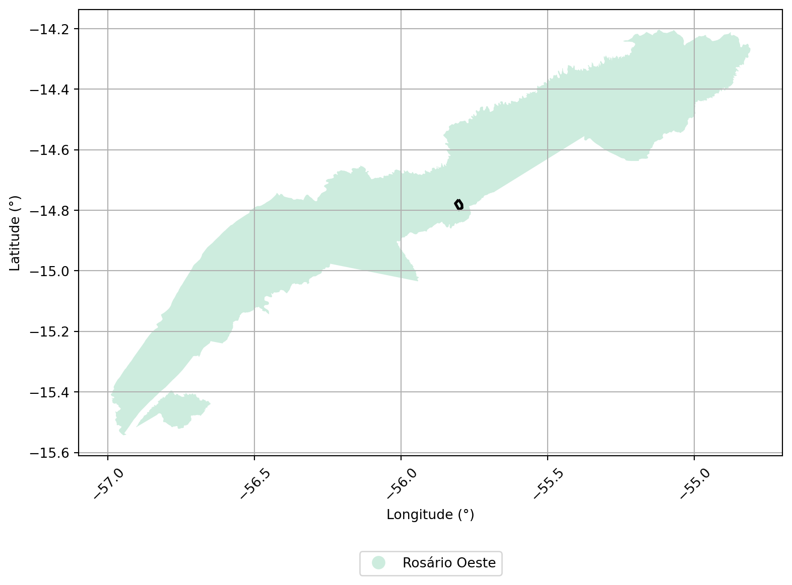
| Estado | Código do Município | Nome do Município |
|---|---|---|
| MT | 5107701 | Rosário Oeste |
48.1.2 Unidades de Conservação
Não há sobreposição
48.1.3 Terras Indígenas
Não há sobreposição
48.1.4 Projetos de Assentamento
Não há sobreposição
48.1.5 Território Quilombola
Não há sobreposição
48.1.6 SIGEF
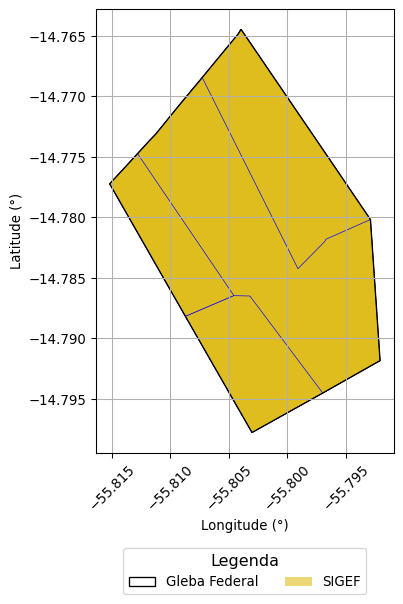
| Código SIGEF | Natureza do Polígono | Área Sobreposta (ha) |
|---|---|---|
| 67d60702-fe6a-4bee-ad15-a2d2e3c8d097 | Gleba Pública | 516.8280 |
| 5c7c8a27-bcd2-405c-8680-69a35170e625 | Particular | 102.0025 |
| d48b71d0-4e4d-4a87-ab97-2f242f08fb74 | Particular | 68.2978 |
| a772568a-4fba-4ef4-9e9b-4b544e60f181 | Particular | 72.3352 |
| b75816a9-89a3-4f6d-a6b8-9ef771da0951 | Particular | 62.4736 |
| 59558731-62bd-465a-a0b7-71d175b662ce | Particular | 132.1430 |
| 366a2e6f-7df3-4403-a015-949996773415 | Particular | 79.5737 |
48.1.7 SNCI
Não há sobreposição
48.2 Gleba Analisada: MARZAGÃO II
| Nome da Gleba | Área (ha) |
|---|---|
| MARZAGÃO II | 6517.7825 |
48.2.1 Abrangência Municipal
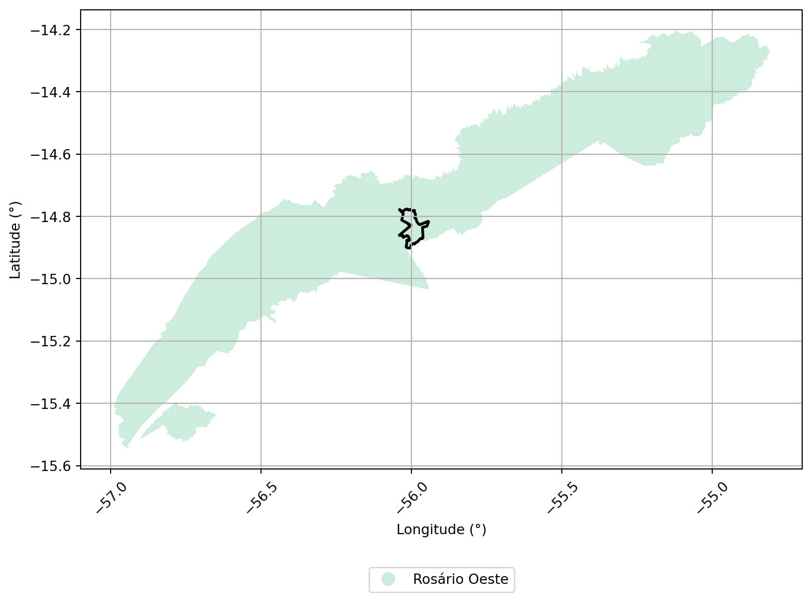
| Estado | Código do Município | Nome do Município |
|---|---|---|
| MT | 5107701 | Rosário Oeste |
48.2.2 Unidades de Conservação
Não há sobreposição
48.2.3 Terras Indígenas
Não há sobreposição
48.2.4 Projetos de Assentamento
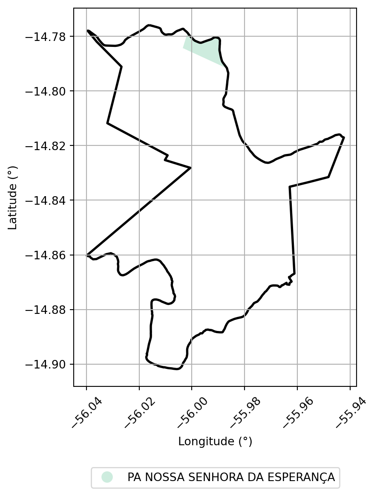
| SIPRA | Nome | Município | Área Sobreposta (ha) |
|---|---|---|---|
| MT0610000 | PA NOSSA SENHORA DA ESPERANÇA | ROSARIO OESTE | 108.8137 |
48.2.5 Território Quilombola
Não há sobreposição
48.2.6 SIGEF
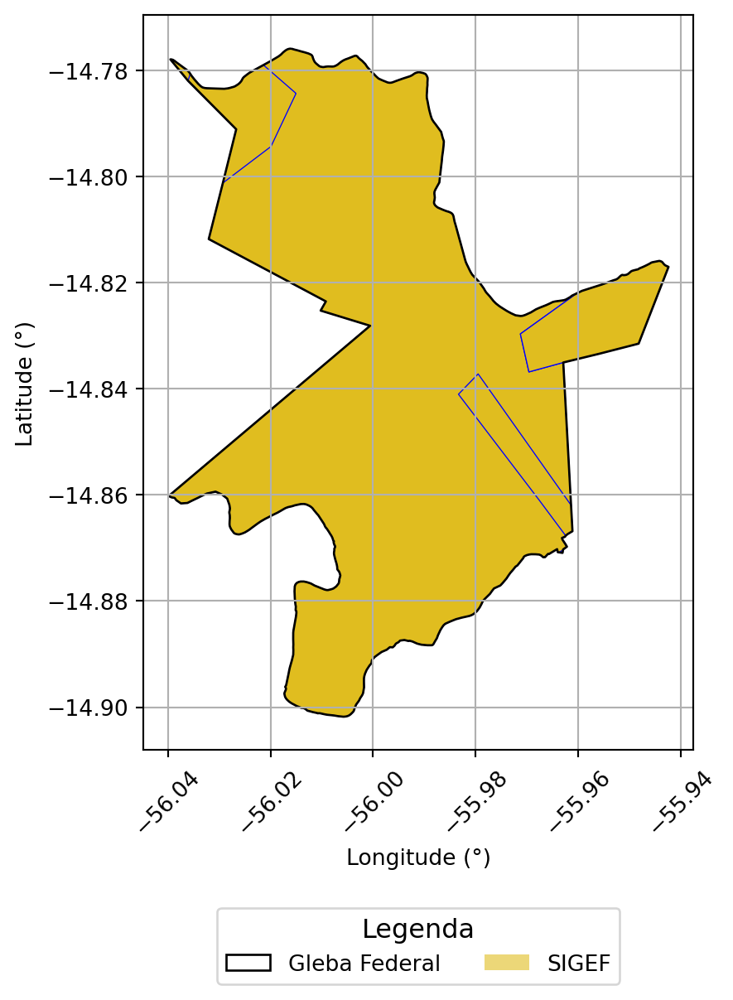
| Código SIGEF | Natureza do Polígono | Área Sobreposta (ha) |
|---|---|---|
| 0fd55f81-d28d-4a97-af55-09d8c9e706b9 | Gleba Pública | 6154.9085 |
| d284bcdd-a223-4eec-85f2-7bb40ef2b76f | Particular | 4.8061 |
| 9eaff2c6-3aa1-435c-bb51-9e56f460cd8e | Particular | 226.5802 |
| be6b1cdc-e1ef-4a1f-8122-8e5c29cda66a | Particular | 188.5071 |
| 79e4a3c9-b2e1-4eb6-ace3-be1c79dc003b | Particular | 461.6981 |
| b37dce27-9caf-4f82-8ccb-07bacc09fe10 | Particular | 632.9381 |
| 6ce57406-5055-4b9a-a725-1e50710a4bf7 | Particular | 96.4630 |
| 61003462-3039-437c-9b73-7ad542bfc97a | Particular | 443.8714 |
| 8068fc25-20e7-45ed-a190-0f93f74b041e | Particular | 22.7236 |
| 5510e41f-ebb4-4142-9e94-fc4143addc8b | Particular | 230.8939 |
| de8b6728-c2c5-4607-85ee-22f5c2125365 | Particular | 991.0491 |
| 64293119-0f95-46be-aaa5-beaeed5da672 | Particular | 379.3021 |
| 5cc59cd6-c1d7-4ec0-af90-ebaac2f5e6cb | Particular | 701.5494 |
| 7ee77e35-82aa-414a-9999-4d16c02a197f | Particular | 70.3782 |
| 79cbe6b5-2738-48f0-9979-9931e07de4e0 | Particular | 763.9596 |
| 9eb5145b-94de-4dcb-b08e-40197247a9c7 | Particular | 780.1898 |
| 067b4d32-2b43-4f5e-b9e9-6055743f1c14 | Particular | 366.0744 |
| f8d2de31-25d1-4609-8349-2839f299e998 | Particular | 0.4157 |
48.2.7 SNCI
Não há sobreposição
48.3 Gleba Analisada: MARZAGÃO II
| Nome da Gleba | Área (ha) |
|---|---|
| MARZAGÃO II | 1207.0068 |
48.3.1 Abrangência Municipal
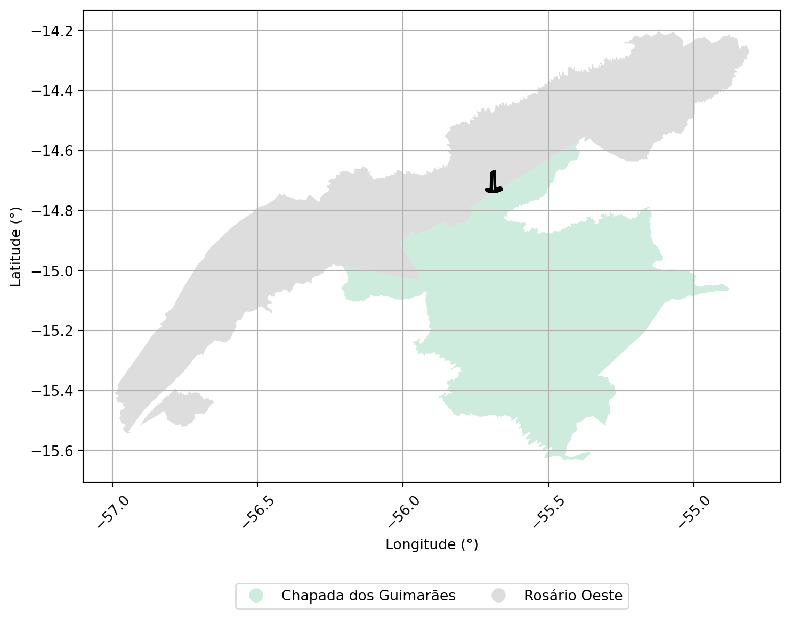
| Estado | Código do Município | Nome do Município |
|---|---|---|
| MT | 5103007 | Chapada dos Guimarães |
| MT | 5107701 | Rosário Oeste |
48.3.2 Unidades de Conservação
Não há sobreposição
48.3.3 Terras Indígenas
Não há sobreposição
48.3.4 Projetos de Assentamento
Não há sobreposição
48.3.5 Território Quilombola
Não há sobreposição
48.3.6 SIGEF
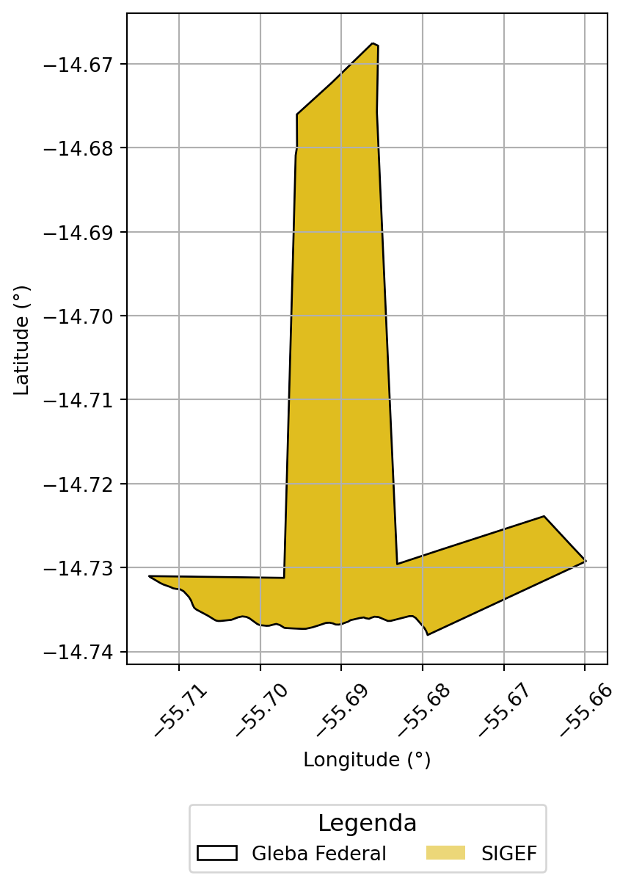
| Código SIGEF | Natureza do Polígono | Área Sobreposta (ha) |
|---|---|---|
| 79f584a0-ebf6-4d71-a5b3-7eeb16b3209f | Gleba Pública | 1207.3792 |
| 1f610416-7420-49d0-bfaf-eacb54f9d030 | Particular | 296.8304 |
| 4e5d1336-cbc0-48c2-9cab-7eca8ae386c9 | Particular | 29.5988 |
| ac58dc7c-2aaf-44db-bd5f-6783646256be | Particular | 662.8605 |
| d4f59826-210f-4434-b869-767a59b109c1 | Particular | 1.7021 |
| 7378b72b-0cdc-434e-863b-4cd9b4618372 | Particular | 13.1990 |
| 29047576-e262-42ee-bc9e-77d79827d313 | Particular | 20.1693 |
| 22a48948-b054-4639-8fd6-93da1be1eab6 | Particular | 11.3722 |
| 8206f3e6-98ed-4cab-9879-35519ca79f99 | Particular | 15.1288 |
48.3.7 SNCI
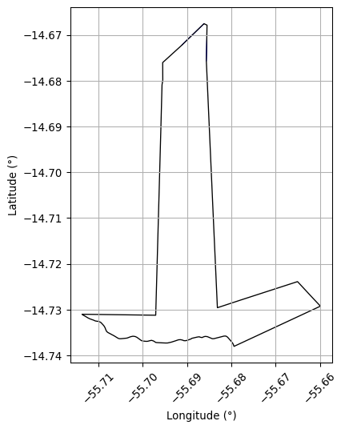
Não há sobreposição
48.4 Gleba Analisada: MARZAGÃO II
| Nome da Gleba | Área (ha) |
|---|---|
| MARZAGÃO II | 1662.0060 |
48.4.1 Abrangência Municipal
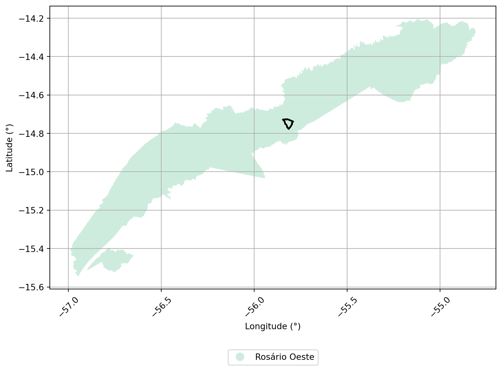
| Estado | Código do Município | Nome do Município |
|---|---|---|
| MT | 5107701 | Rosário Oeste |
48.4.2 Unidades de Conservação
Não há sobreposição
48.4.3 Terras Indígenas
Não há sobreposição
48.4.4 Projetos de Assentamento
Não há sobreposição
48.4.5 Território Quilombola
Não há sobreposição
48.4.6 SIGEF
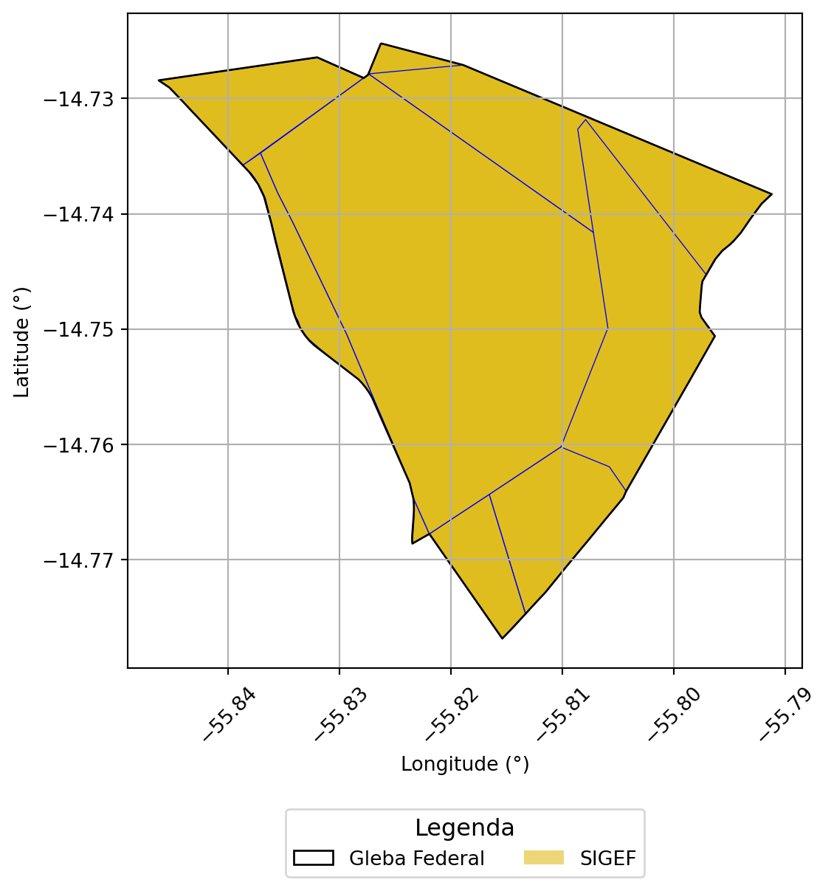
| Código SIGEF | Natureza do Polígono | Área Sobreposta (ha) |
|---|---|---|
| 3776b7c7-58da-4e61-a57a-4a8ac8751a73 | Gleba Pública | 1662.6280 |
| 4084c962-602d-4a96-9d2a-887ca8248755 | Particular | 257.2266 |
| ec7e1a0a-af28-4ddc-8743-2389901d2c0d | Particular | 100.2302 |
| 98bfd00c-a16a-4ba9-8c14-32972c471555 | Particular | 59.5100 |
| d5f41f4b-3c5e-432a-8816-36d964e48ee2 | Particular | 232.6082 |
| c5339998-6dec-4acd-a45b-f7822d701b2f | Particular | 57.3281 |
| 2d92e610-e768-4fab-99fd-cab5aca80840 | Particular | 3.2388 |
| 978f4728-6098-4065-8b4f-d6216d9edb45 | Particular | 111.7102 |
| dc4b8826-3867-4e9c-a169-cd270d5c2fb9 | Particular | 824.6597 |
| 089f4ab5-6b6a-4b28-83be-8545b7b35e1f | Particular | 0.1294 |
| 73bce168-10aa-4741-b777-793b6344f47e | Particular | 0.0471 |
| d3de1b5e-d978-46fb-950e-77dd9fb677d9 | Particular | 0.2067 |
48.4.7 SNCI
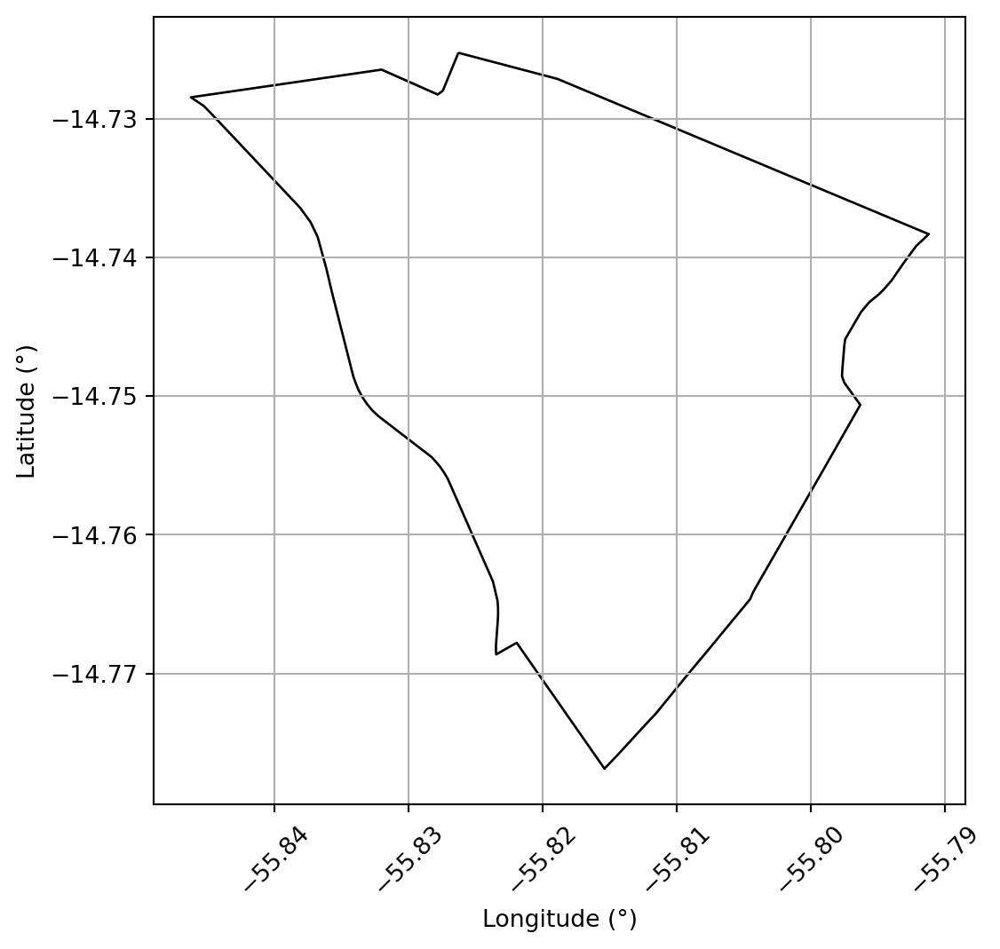
Não há sobreposição
48.5 Gleba Analisada: MARZAGÃO II
| Nome da Gleba | Área (ha) |
|---|---|
| MARZAGÃO II | 452.3732 |
48.5.1 Abrangência Municipal
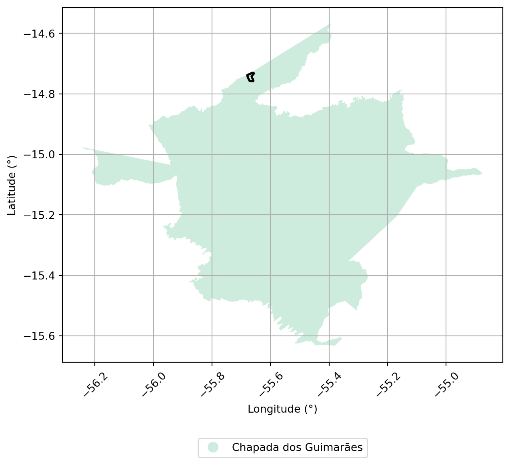
| Estado | Código do Município | Nome do Município |
|---|---|---|
| MT | 5103007 | Chapada dos Guimarães |
48.5.2 Unidades de Conservação
Não há sobreposição
48.5.3 Terras Indígenas
Não há sobreposição
48.5.4 Projetos de Assentamento
Não há sobreposição
48.5.5 Território Quilombola
Não há sobreposição
48.5.6 SIGEF
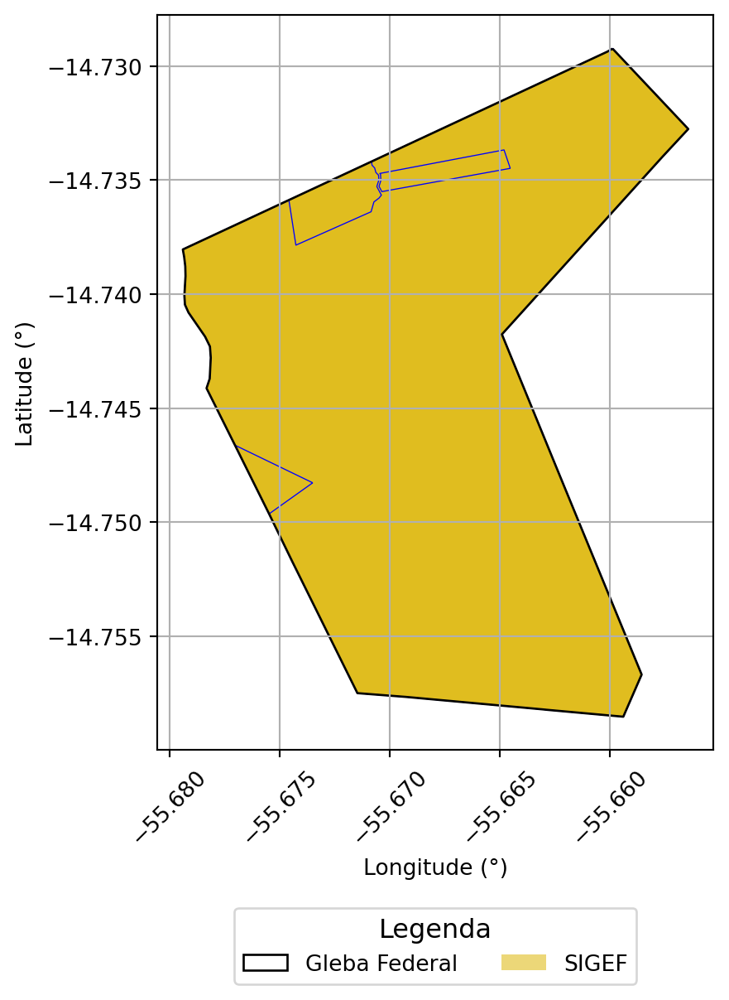
| Código SIGEF | Natureza do Polígono | Área Sobreposta (ha) |
|---|---|---|
| 4ef13848-237d-412a-98b6-7515e21a5470 | Gleba Pública | 452.5052 |
| deaf748c-deaf-4b38-baf2-bc224d86b81f | Particular | 9.3746 |
| d4f59826-210f-4434-b869-767a59b109c1 | Particular | 241.6951 |
| 7378b72b-0cdc-434e-863b-4cd9b4618372 | Particular | 9.0173 |
| b9e74a17-a48a-4033-9b8b-8181dae74cd3 | Particular | 54.1078 |
| 29047576-e262-42ee-bc9e-77d79827d313 | Particular | 32.8983 |
| 22a48948-b054-4639-8fd6-93da1be1eab6 | Particular | 30.1106 |
| f62a6f3a-888c-4190-a7ff-9a04ee4440ed | Particular | 38.6419 |
| 10de2f2b-9ff2-48e1-8da0-2f19ab03ddfa | Particular | 14.3666 |
| 8206f3e6-98ed-4cab-9879-35519ca79f99 | Particular | 9.7843 |
| 8fe80655-7a02-4847-b054-0282980a2333 | Particular | 5.7380 |
| 9ffb2129-62e4-4da2-9262-bbbddd7e09b8 | Particular | 4.8134 |
48.5.7 SNCI
Não há sobreposição
48.6 Gleba Analisada: MARZAGÃO II
| Nome da Gleba | Área (ha) |
|---|---|
| MARZAGÃO II | 1950.5167 |
48.6.1 Abrangência Municipal
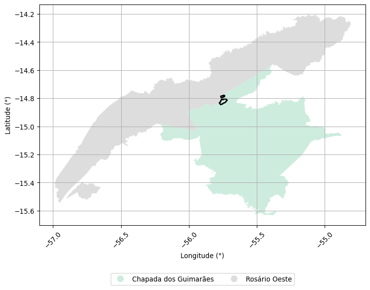
| Estado | Código do Município | Nome do Município |
|---|---|---|
| MT | 5103007 | Chapada dos Guimarães |
| MT | 5107701 | Rosário Oeste |
48.6.2 Unidades de Conservação
Não há sobreposição
48.6.3 Terras Indígenas
Não há sobreposição
48.6.4 Projetos de Assentamento
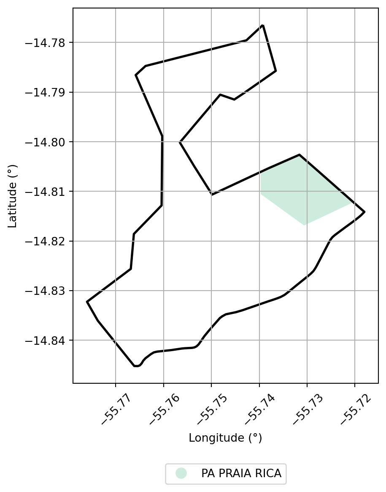
| SIPRA | Nome | Município | Área Sobreposta (ha) |
|---|---|---|---|
| MT0090000 | PA PRAIA RICA | CHAPADA DOS GUIMARAES | 185.6187 |
48.6.5 Território Quilombola
Não há sobreposição
48.6.6 SIGEF
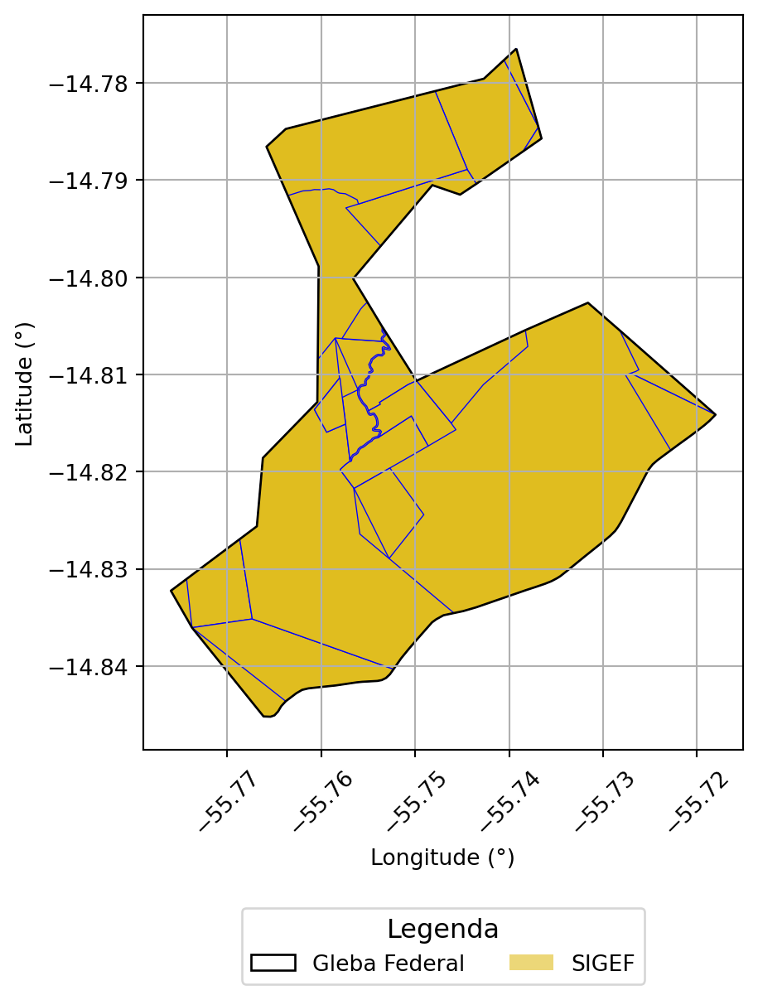
| Código SIGEF | Natureza do Polígono | Área Sobreposta (ha) |
|---|---|---|
| 9c3708f0-884e-4fc2-a544-a51e3b7890de | Gleba Pública | 1951.2028 |
| 81ff7ff4-61d5-48f0-97da-2650f0bfadab | Particular | 20.9689 |
| 9acd581a-31dc-4e28-aa4d-5fbc3ab8c3b1 | Particular | 17.8134 |
| 1a66bceb-d3e3-4a0c-ae3a-f3da3869b9af | Particular | 37.5899 |
| 268c6570-b606-4334-ba16-c657285e6170 | Particular | 11.9725 |
| d6420ec2-68fa-4366-a155-1d65357145ec | Particular | 16.6497 |
| be71616e-c5fa-4978-96de-463ba3589b04 | Particular | 25.5905 |
| 69cc0d8d-70fd-420a-bf5e-850cb374a82a | Particular | 18.2227 |
| 108b5c0a-3f39-4f73-aa9a-c4f35cc388dc | Particular | 47.8478 |
| 7455af86-51e7-471e-97b3-33ea9b24af15 | Particular | 34.4446 |
| 4a7ba484-3412-4fa0-8103-4f1ccecfa655 | Particular | 35.5089 |
| 251fec94-1920-4a9c-af5d-5e907b0bcb2d | Particular | 35.2913 |
| 149f5a31-1e0a-44ff-b3d4-3ad25c56c5fd | Particular | 41.3354 |
| bb9233fe-e5de-4aad-bb66-f2ecebef0b88 | Particular | 1.6425 |
| 7fa82693-d9e7-4b72-919d-ddc3f39e215b | Particular | 7.9322 |
| f81a8f41-9d54-4add-a1bf-7b82cfc4917b | Particular | 91.4644 |
| b8ced842-38ed-480f-8e56-753d9624641d | Particular | 58.9132 |
| 49eee88c-d9fa-4b45-bfb6-827e18c24f0c | Particular | 352.6783 |
| f14090c8-842b-4e4b-b46b-beef737ef663 | Particular | 99.1640 |
| 06e381f8-fcf5-4542-bdf7-f9da9d840843 | Particular | 12.3723 |
| 42f4a4af-deaa-4dc6-bac1-e67f3d19eac7 | Particular | 186.4677 |
48.6.7 SNCI
Não há sobreposição
48.7 Gleba Analisada: MARZAGÃO V
| Nome da Gleba | Área (ha) |
|---|---|
| MARZAGÃO V | 1551.1555 |
48.7.1 Abrangência Municipal
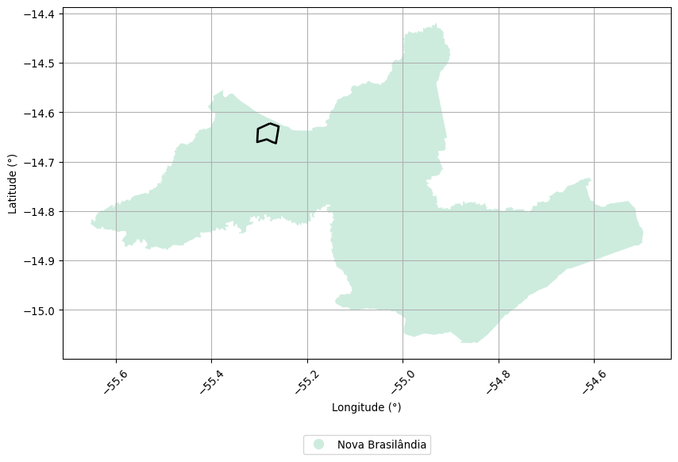
| Estado | Código do Município | Nome do Município |
|---|---|---|
| MT | 5106208 | Nova Brasilândia |
48.7.2 Unidades de Conservação
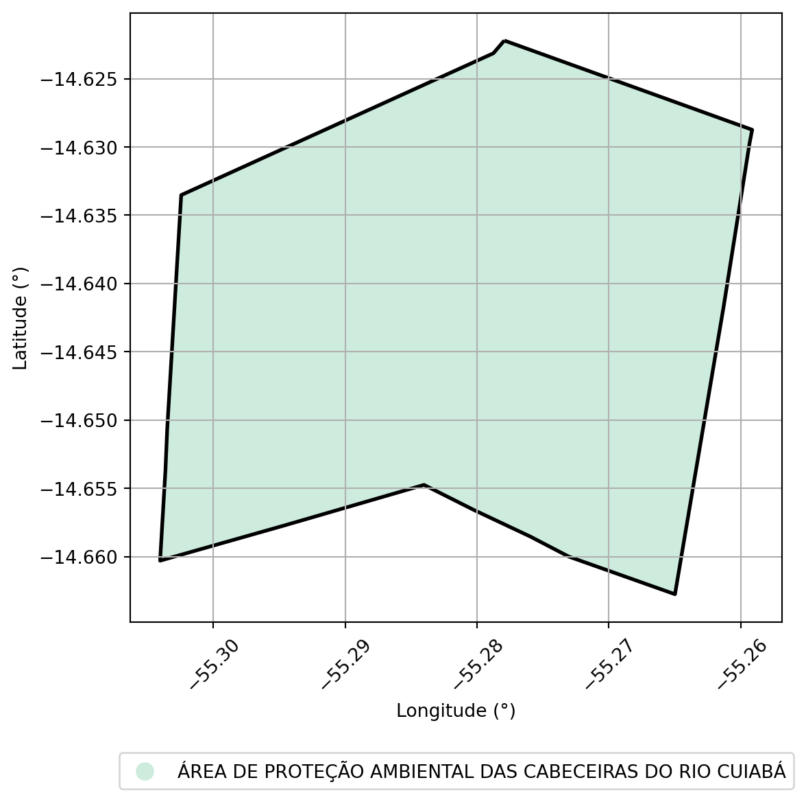
| Nome | Categoria | Responsabilidade | Área Sobreposta (ha) |
|---|---|---|---|
| ÁREA DE PROTEÇÃO AMBIENTAL DAS CABECEIRAS DO RIO CUIABÁ | Área de Proteção Ambiental | Estadual | 1551.2573 |
48.7.3 Terras Indígenas
Não há sobreposição
48.7.4 Projetos de Assentamento
Não há sobreposição
48.7.5 Território Quilombola
Não há sobreposição
48.7.6 SIGEF
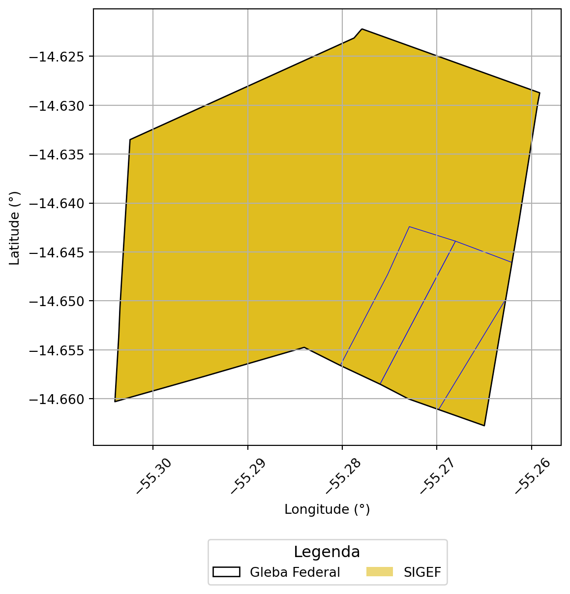
| Código SIGEF | Natureza do Polígono | Área Sobreposta (ha) |
|---|---|---|
| 9a995b4a-c8ad-45a4-a5b7-ee50f3364210 | Gleba Pública | 1551.2573 |
| 88889c88-8fd8-428b-b84e-0966c617d356 | Particular | 239.8822 |
| f5406450-09e4-4692-9f33-37820a9a229f | Particular | 614.1032 |
| 20b98f04-ffac-4435-8ec4-3e888b3d73e6 | Particular | 4.4690 |
| 6e44ca6f-63db-4107-8c0b-29b6643f73c9 | Particular | 288.7561 |
| c417d739-76be-448d-bba5-9c0fb611515f | Particular | 142.2834 |
| d16e0520-a99a-480d-b3b9-3c478c86b63d | Particular | 91.3613 |
48.7.7 SNCI
Não há sobreposição
48.8 Gleba Analisada: MARZAGÃO VII
| Nome da Gleba | Área (ha) |
|---|---|
| MARZAGÃO VII | 538.1574 |
48.8.1 Abrangência Municipal
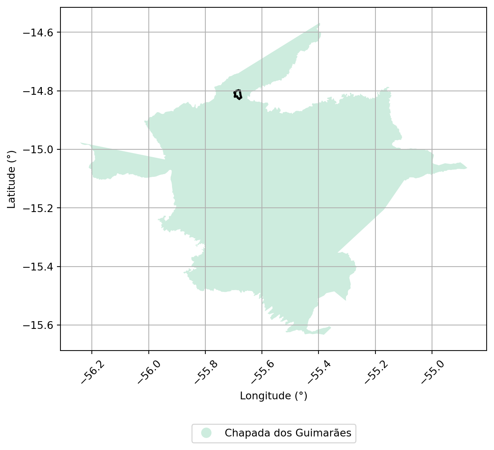
| Estado | Código do Município | Nome do Município |
|---|---|---|
| MT | 5103007 | Chapada dos Guimarães |
48.8.2 Unidades de Conservação
Não há sobreposição
48.8.3 Terras Indígenas
Não há sobreposição
48.8.4 Projetos de Assentamento
Não há sobreposição
48.8.5 Território Quilombola
Não há sobreposição
48.8.6 SIGEF
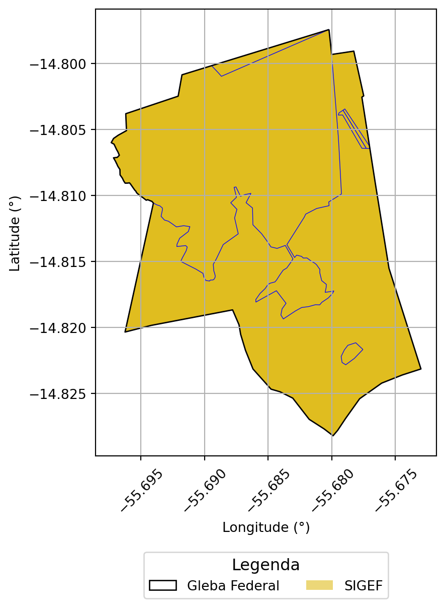
| Código SIGEF | Natureza do Polígono | Área Sobreposta (ha) |
|---|---|---|
| 3a4180af-ae74-44b5-b730-7c821afd6427 | Gleba Pública | 538.3264 |
| 2a952a57-fe66-46ed-8985-e951f5d05ba0 | Particular | 0.2614 |
| 245d4648-84eb-4051-9d89-2f88ac3b021f | Particular | 0.8249 |
| 5a27e45c-2b31-4906-8c64-882af4c2c43d | Particular | 0.9375 |
| 115e3d4e-75f3-483a-8277-e22f5d755d7a | Particular | 0.0045 |
| d5386c92-93ed-4bdd-852a-0af82c6862d4 | Particular | 0.4915 |
| 5a83452e-63d7-4a90-98d3-110b2dfafda2 | Particular | 0.7649 |
| 1c044e15-b645-486c-89c9-35380f3b0e2f | Particular | 254.7433 |
| 08b2c3de-0039-4d05-a541-13d18f63737f | Particular | 1.0130 |
| 777c97bb-6b00-4ca5-ab86-1204fd9e48fc | Particular | 1.0415 |
| f6ba73a5-dd34-42d8-8e8b-cfa947be4094 | Particular | 1.8844 |
48.8.7 SNCI
Não há sobreposição
48.9 Gleba Analisada: MATRINXÃ
| Nome da Gleba | Área (ha) |
|---|---|
| MATRINXÃ | 2607.0182 |
48.9.1 Abrangência Municipal
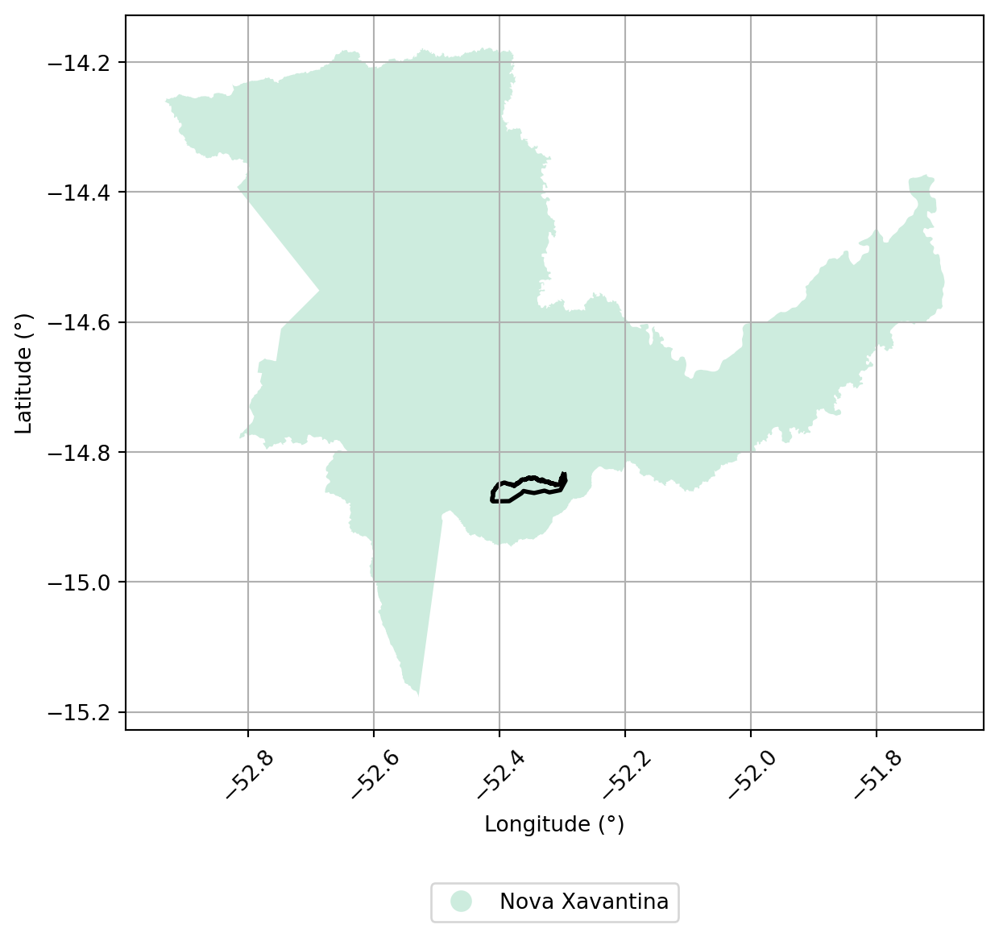
| Estado | Código do Município | Nome do Município |
|---|---|---|
| MT | 5106257 | Nova Xavantina |
48.9.2 Unidades de Conservação
Não há sobreposição
48.9.3 Terras Indígenas
Não há sobreposição
48.9.4 Projetos de Assentamento
Não há sobreposição
48.9.5 Território Quilombola
Não há sobreposição
48.9.6 SIGEF
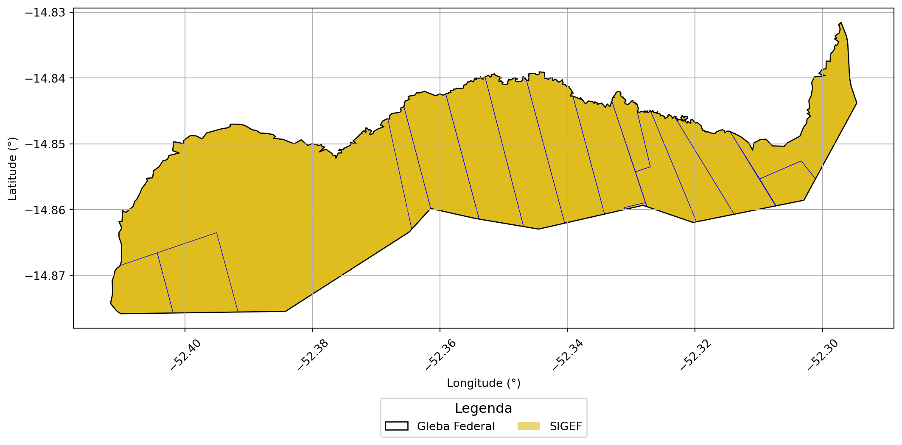
| Código SIGEF | Natureza do Polígono | Área Sobreposta (ha) |
|---|---|---|
| e60581f7-034b-4297-afa7-4e171560192b | Gleba Pública | 2607.7684 |
| a27f1999-4e97-4b82-a5bc-6d180cf414e7 | Particular | 64.8742 |
| 71571ada-666a-4b5a-8b95-7cf40499a832 | Particular | 152.9115 |
| b45d4302-d32f-4282-8cd2-e31e742b3af9 | Particular | 168.7882 |
| 6114a762-782b-4ba9-b113-299c57fbc55c | Particular | 173.0901 |
| ba9a2b7f-1172-4875-8343-cde3824540de | Particular | 168.1121 |
| 4e26e824-1fe9-4548-922c-8b281cb2b72e | Particular | 43.0331 |
| 4c2f6124-1655-4b39-8caa-39a369d8bedd | Particular | 85.5447 |
| 891926dd-14b5-492d-b0f6-4d9dbbcd9989 | Particular | 39.9689 |
| 0a89cb56-92ca-4866-8f9f-6d68cc664316 | Particular | 91.8497 |
| 45dd3ae2-448c-41ae-9a7d-8ce47881a198 | Particular | 166.8646 |
| f43972db-e7be-476f-81b2-8720fa303b75 | Particular | 109.9051 |
| 0fb1c22c-8360-4367-ac2a-001bdcae4f6a | Particular | 123.3698 |
| 42df661f-9252-465e-aee0-0f7df9e22bdc | Particular | 1.3100 |
| 85e3b5a0-16fd-4d24-b494-78308e6a810c | Particular | 79.8981 |
| 9beb3b20-089b-4b4f-b36b-abdf7e91ae59 | Particular | 128.6044 |
48.9.7 SNCI
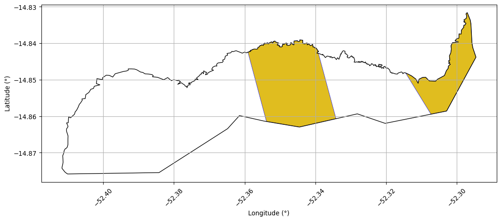
Não há sobreposição
48.10 Gleba Analisada: MATRINXÃ 01
| Nome da Gleba | Área (ha) |
|---|---|
| MATRINXÃ 01 | 40997.7863 |
48.10.1 Abrangência Municipal
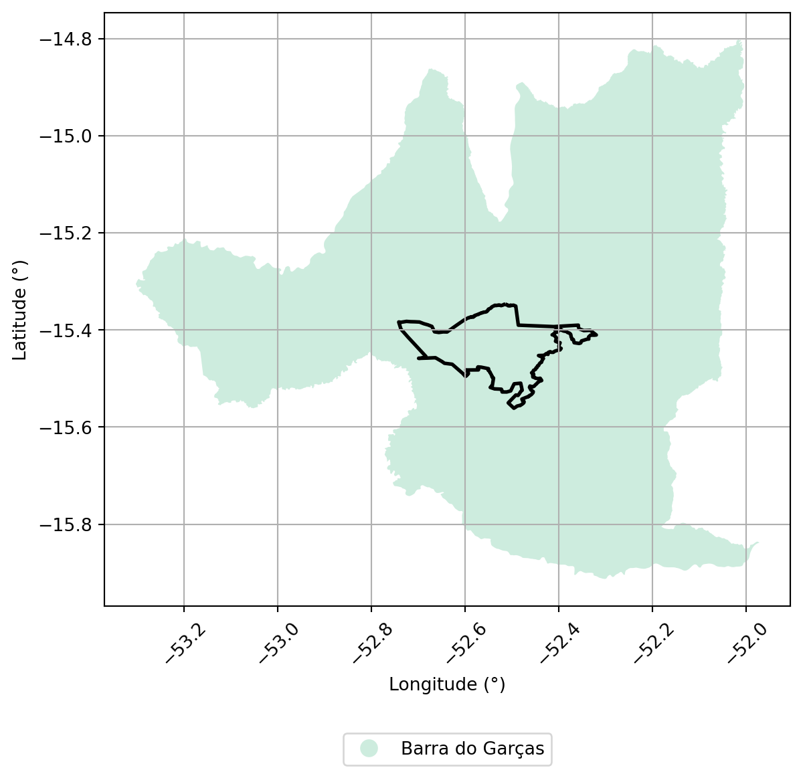
| Estado | Código do Município | Nome do Município |
|---|---|---|
| MT | 5101803 | Barra do Garças |
48.10.2 Unidades de Conservação
Não há sobreposição
48.10.3 Terras Indígenas
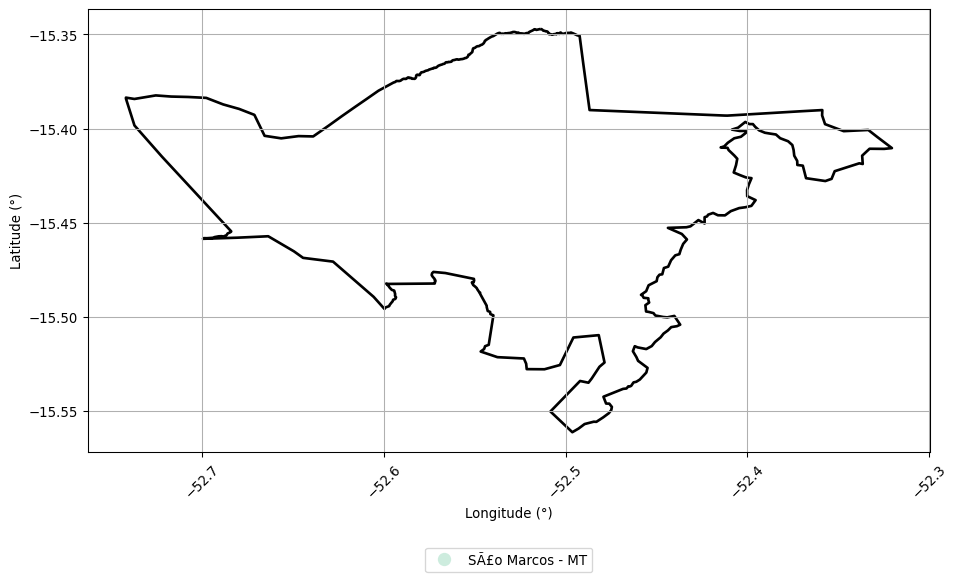
| Nome | Fase de Regularização | Área Sobreposta (ha) |
|---|---|---|
| São Marcos - MT | Regularizada | 0.0051 |
48.10.4 Projetos de Assentamento
Não há sobreposição
48.10.5 Território Quilombola
Não há sobreposição
48.10.6 SIGEF
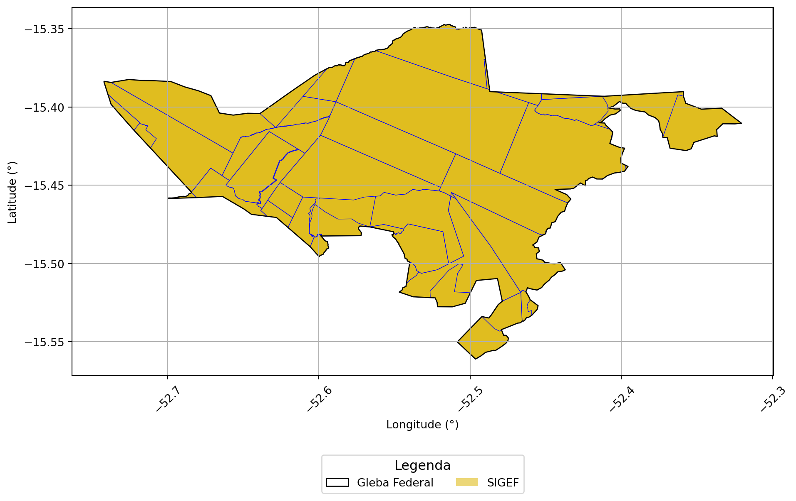
| Código SIGEF | Natureza do Polígono | Área Sobreposta (ha) |
|---|---|---|
| 2d70bb26-e73f-458c-b800-73be687a4a1d | Gleba Pública | 41002.7039 |
| 0b192843-181e-461b-b418-f26d19531918 | Particular | 901.9718 |
| 179491cf-6dcf-44f0-9a1c-8f77f5ed838d | Particular | 3591.6498 |
| 4d14fda4-d8c5-4164-a9d3-fd5198e5713c | Particular | 719.5718 |
| cdd8c1f3-d29e-48db-b0d8-47991bedac3c | Particular | 169.6499 |
| 8a79437d-f41a-4533-a0a1-a98646aa01e4 | Particular | 907.0413 |
| 89470824-7c0a-4ee1-bd28-fd06fed0a4eb | Particular | 69.1384 |
| 809148af-4614-48b6-ac48-f295038c87f2 | Particular | 63.0733 |
| 979fcd62-ebda-4a68-ac6e-51045d77a1fe | Particular | 111.6539 |
| 1206492f-0419-44d1-88da-f5339613db29 | Particular | 1874.9816 |
| 4c59ee84-c5b6-4b0d-8aa8-c99434a86f7b | Particular | 5.1289 |
| 94060554-e09d-44ac-8510-d9cf3576f02e | Particular | 1579.4652 |
| 0cf279a4-4605-47e7-a159-6a962e6e9d34 | Particular | 2305.5861 |
| 92208b0d-4a6f-4120-837d-9d6518acdbf1 | Particular | 1845.4436 |
| 39ab3d11-08d1-4b57-8f97-4a432e6191f3 | Particular | 358.8364 |
| a39b3231-9cd4-4aee-ac24-3814867c42ec | Particular | 2180.8076 |
| 6b2be4cd-016b-4770-b5cb-f98e379b118a | Particular | 540.7165 |
| d737fbd6-310b-42d4-9b61-ea74b6e3b388 | Particular | 329.7776 |
| e9962df8-c441-4bf9-9c6b-04e8430567ae | Particular | 1115.5145 |
| 0eca8955-0f35-40b1-a1e5-8cf815a271f5 | Particular | 2736.4833 |
| bb74389a-9ff3-4561-8e53-ac6376ffc5d7 | Particular | 2127.0657 |
| 531e1cd1-f597-4993-a925-4e70340ab60a | Particular | 6065.3105 |
| 4f5db36c-2595-4a80-8d9c-ddd8159552c9 | Particular | 503.6177 |
| c8b979a9-047b-4ffc-823b-ba20db9d50df | Particular | 500.2116 |
| 07ffe684-8e00-4db0-b30f-f108e491d90d | Particular | 2416.6542 |
| d8de01aa-d0eb-4b50-aabb-9a75aceb78aa | Particular | 175.1547 |
| cb4c477a-a2e4-4745-b73a-e5a21270bab3 | Particular | 320.6480 |
| 5def090d-cd5a-40e9-949c-b5d6f71ae5e1 | Particular | 512.1587 |
| 42720786-b164-4122-a9d4-7fe61a9ed9a0 | Particular | 122.2944 |
| 0a5425a6-85cd-44c8-80ef-a8c7e4502753 | Particular | 0.0044 |
| a068025a-a23e-4730-a47d-2d3398074b56 | Particular | 1040.7483 |
| 260c08fa-26a1-486c-9eac-6e1661635bdb | Particular | 0.2203 |
| 2ddbf00d-b1a6-411f-a126-0d11a6b189eb | Particular | 138.5530 |
48.10.7 SNCI
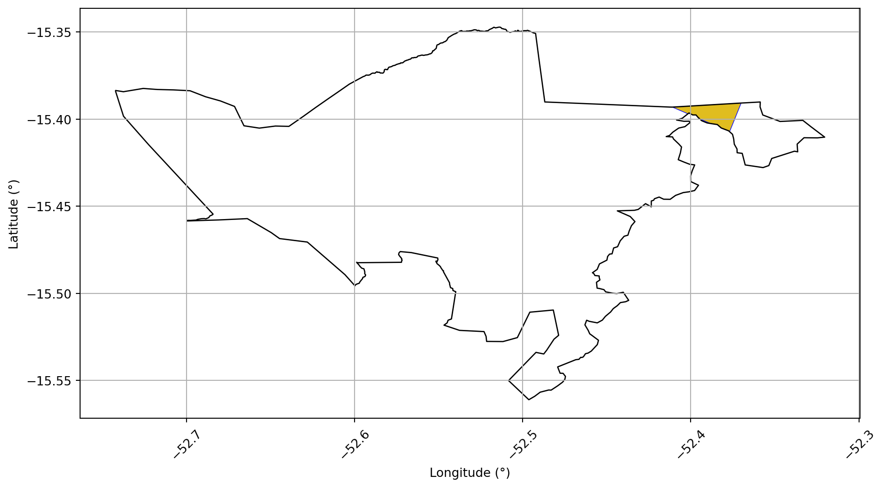
Não há sobreposição
48.11 Gleba Analisada: MATRINXÃ 02
| Nome da Gleba | Área (ha) |
|---|---|
| MATRINXÃ 02 | 9636.4367 |
48.11.1 Abrangência Municipal
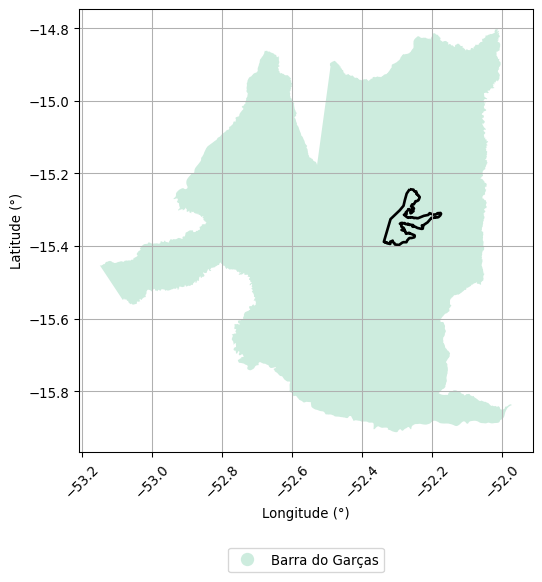
| Estado | Código do Município | Nome do Município |
|---|---|---|
| MT | 5101803 | Barra do Garças |
48.11.2 Unidades de Conservação
Não há sobreposição
48.11.3 Terras Indígenas
Não há sobreposição
48.11.4 Projetos de Assentamento
Não há sobreposição
48.11.5 Território Quilombola
Não há sobreposição
48.11.6 SIGEF
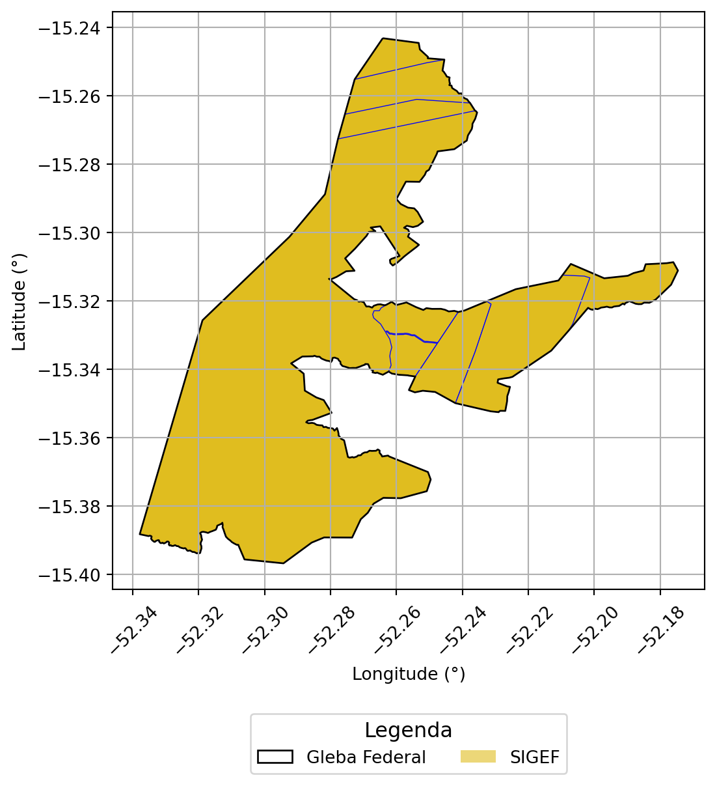
| Código SIGEF | Natureza do Polígono | Área Sobreposta (ha) |
|---|---|---|
| cbca2ea8-1a33-4255-8a0b-3e1ad0e9dffe | Gleba Pública | 9638.6327 |
| 578fc95a-59e8-4166-b5d8-21e1886849ea | Particular | 223.7183 |
| e7b7f48a-c2ba-4db4-a550-293021541e4b | Particular | 150.3246 |
| b17680b6-d6e1-400a-abec-4fc13a115ff8 | Particular | 933.5723 |
| 7ec9d0f8-9030-4857-9619-de242b63c4fb | Particular | 277.6745 |
| e41ec5b9-1b19-47ec-8e3a-c12b88eb2344 | Particular | 390.5350 |
| d4bb7db7-100f-40d2-954d-410d7a46812f | Particular | 0.0017 |
| 67f921d7-b687-43e9-8726-43c948f59a4f | Particular | 172.9821 |
48.11.7 SNCI
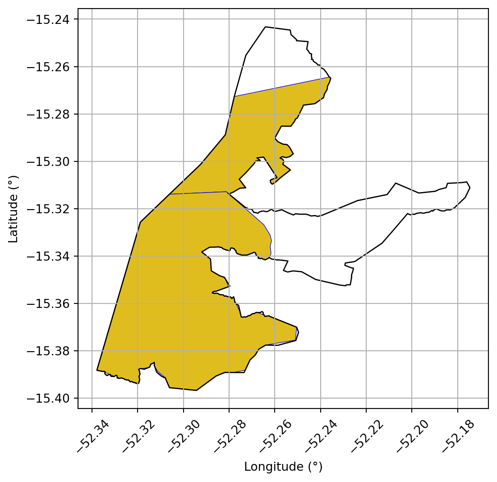
Não há sobreposição
48.12 Gleba Analisada: MATRINXÃ 03
| Nome da Gleba | Área (ha) |
|---|---|
| MATRINXÃ 03 | 10126.5606 |
48.12.1 Abrangência Municipal
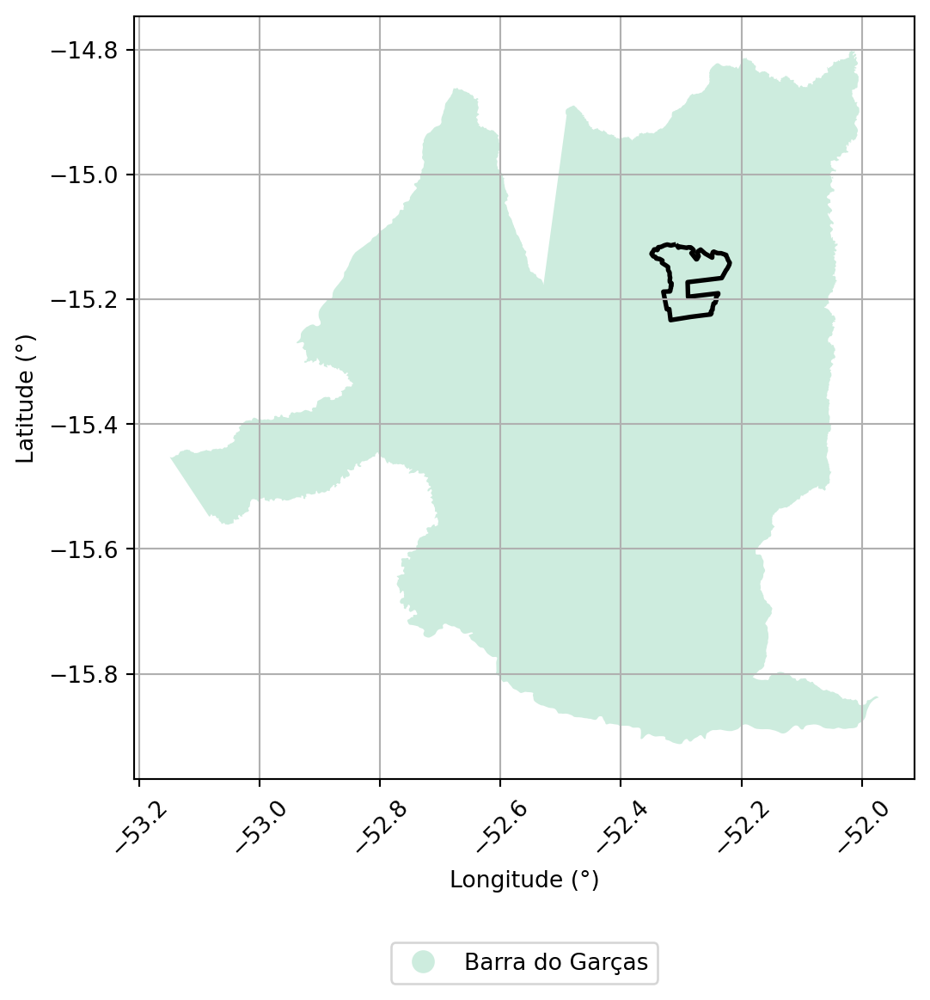
| Estado | Código do Município | Nome do Município |
|---|---|---|
| MT | 5101803 | Barra do Garças |
48.12.2 Unidades de Conservação
Não há sobreposição
48.12.3 Terras Indígenas
Não há sobreposição
48.12.4 Projetos de Assentamento
Não há sobreposição
48.12.5 Território Quilombola
Não há sobreposição
48.12.6 SIGEF
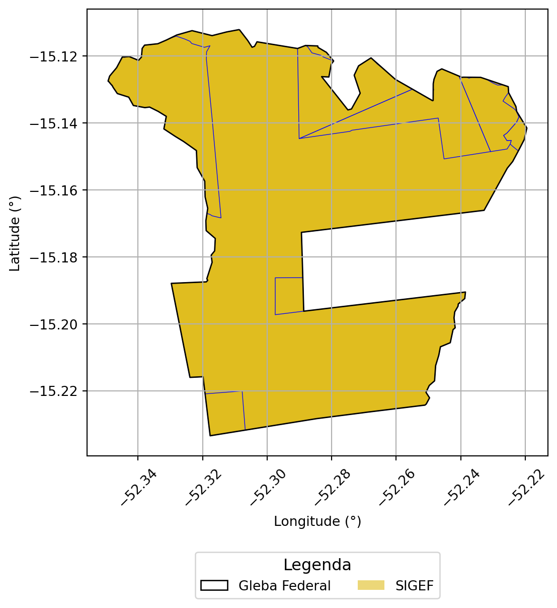
| Código SIGEF | Natureza do Polígono | Área Sobreposta (ha) |
|---|---|---|
| 1374471a-7ed2-4308-ab16-e3fece4cf84d | Gleba Pública | 10129.0542 |
| 5c595b8e-7f96-4488-a842-02447f913762 | Particular | 391.1689 |
| 8546a37c-4d25-47f0-b8e0-ff3fd436cc7e | Particular | 108.8343 |
| 00b588ec-0d23-4638-8dc7-bcf85f9d6eb9 | Particular | 608.0841 |
| b49276df-f532-4ca6-8ade-6ab6f342df0a | Particular | 912.5506 |
| 97396d7c-311e-4cd3-b8a1-b1da5e23cbaf | Particular | 162.8599 |
| cffdeff9-3bf5-4418-abbc-7352a06afac0 | Particular | 44.4204 |
| f56cdec8-dead-4f7c-869b-d9aaf4b45d75 | Particular | 296.1711 |
| 2a76976e-f186-4b54-8629-c508a43c1194 | Particular | 300.6602 |
| fda2d0eb-6000-4447-bfc2-638aef998a2b | Particular | 506.3531 |
| c4301031-d8f0-42e7-baff-c1df9bf77785 | Particular | 0.0002 |
| cfd11b46-9874-470d-a265-b41fe44b9b10 | Particular | 425.3126 |
| 664146f9-909d-4cb0-b632-355fc110f4dd | Particular | 12.7177 |
| 440e527d-4671-4759-a95f-253dc049d685 | Particular | 94.7227 |
| 50daaf72-dfa9-4e02-b525-bf29f936c4a2 | Particular | 706.9793 |
| 272ff077-c8eb-4ef3-98a3-261ac461fa5c | Particular | 626.9518 |
| 269f94fe-aaf1-4292-a10f-69eac07ffd26 | Particular | 242.1890 |
| 88169d79-67bc-49fd-bb63-cd05565ccc41 | Particular | 76.5686 |
| fe1c6723-5eb2-4053-95de-ab2c75ccf09a | Particular | 245.2971 |
| 66a8c101-89a0-48d8-bb9b-e1ed73b56851 | Particular | 2.7497 |
| 6f7212a5-a4ad-4a56-98d4-2d5f2efd7d39 | Particular | 266.2661 |
48.12.7 SNCI
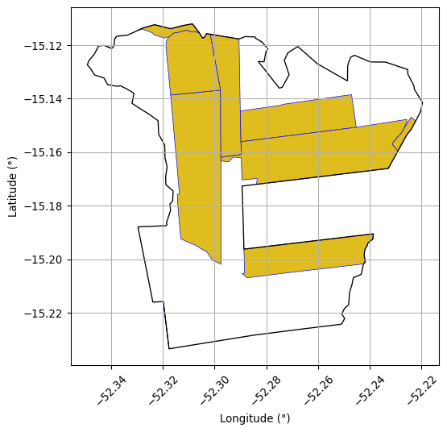
Não há sobreposição
48.13 Gleba Analisada: MATRINXÃ 04
| Nome da Gleba | Área (ha) |
|---|---|
| MATRINXÃ 04 | 8575.3230 |
48.13.1 Abrangência Municipal
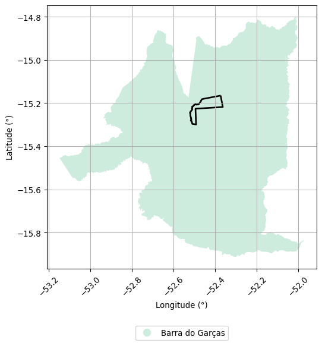
| Estado | Código do Município | Nome do Município |
|---|---|---|
| MT | 5101803 | Barra do Garças |
48.13.2 Unidades de Conservação
Não há sobreposição
48.13.3 Terras Indígenas
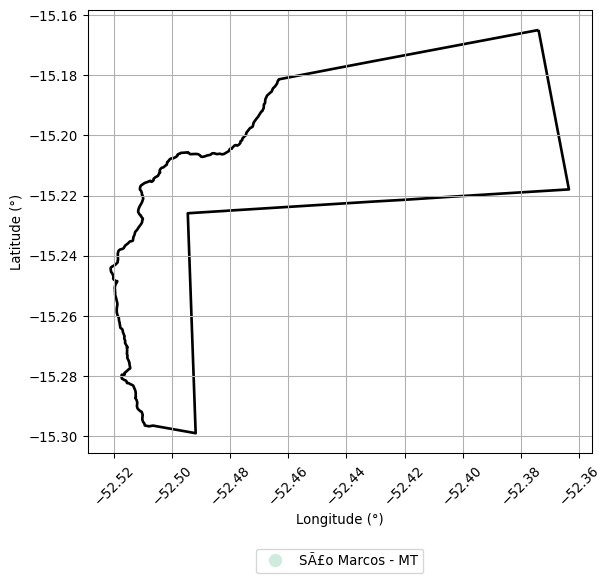
| Nome | Fase de Regularização | Área Sobreposta (ha) |
|---|---|---|
| São Marcos - MT | Regularizada | 0.4518 |
48.13.4 Projetos de Assentamento
Não há sobreposição
48.13.5 Território Quilombola
Não há sobreposição
48.13.6 SIGEF
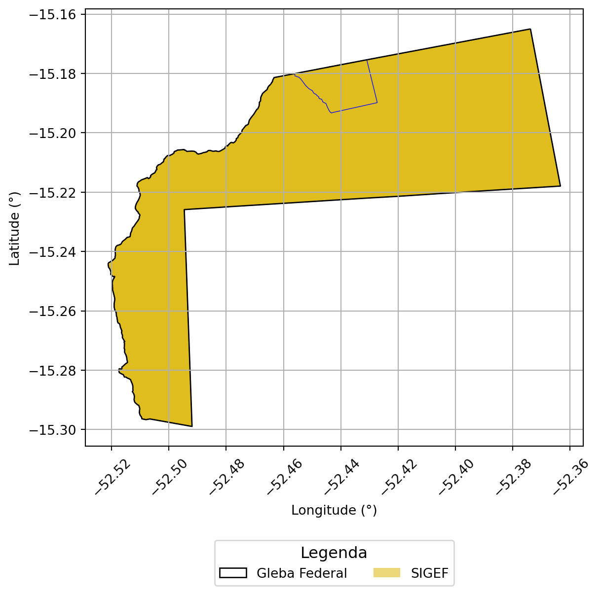
| Código SIGEF | Natureza do Polígono | Área Sobreposta (ha) |
|---|---|---|
| 59ed344e-b02d-4046-94dd-4005557bc3ed | Gleba Pública | 8576.6004 |
| 958d1a35-39f5-4de0-91fb-5a61742849dc | Particular | 2691.0975 |
| 7e72da8e-77e2-4db1-9cb6-f1f112bccb29 | Particular | 1743.9863 |
| 2ecc31d2-bb51-4790-b249-8dd7914edadf | Particular | 373.0084 |
48.13.7 SNCI
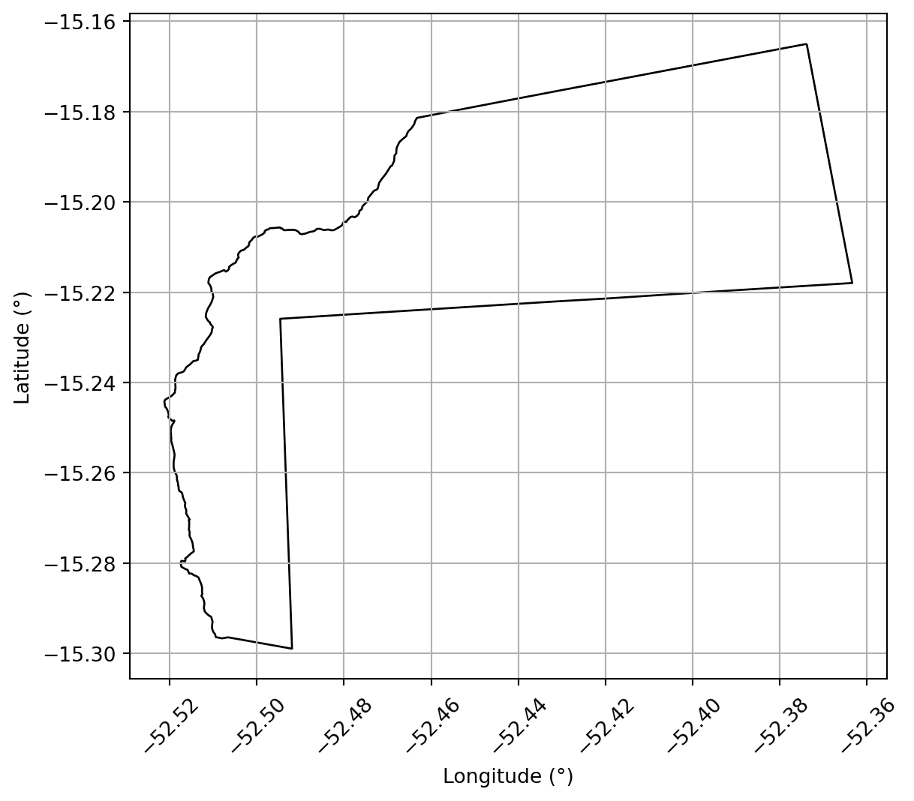
Não há sobreposição
48.14 Gleba Analisada: MATRINXÃ 06
| Nome da Gleba | Área (ha) |
|---|---|
| MATRINXÃ 06 | 851.3492 |
48.14.1 Abrangência Municipal
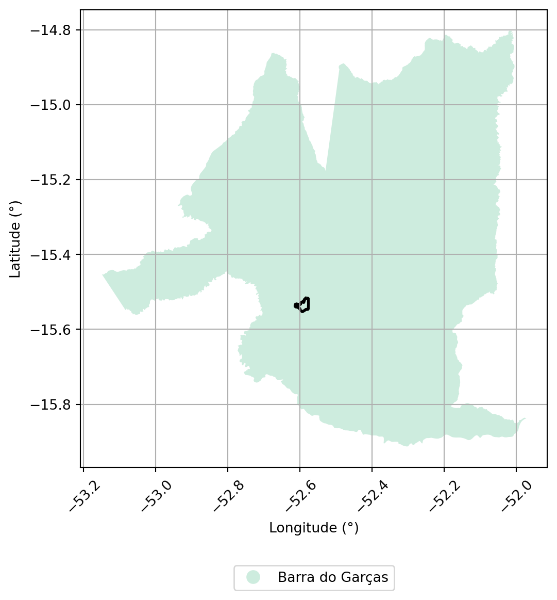
| Estado | Código do Município | Nome do Município |
|---|---|---|
| MT | 5101803 | Barra do Garças |
48.14.2 Unidades de Conservação
Não há sobreposição
48.14.3 Terras Indígenas
Não há sobreposição
48.14.4 Projetos de Assentamento
Não há sobreposição
48.14.5 Território Quilombola
Não há sobreposição
48.14.6 SIGEF
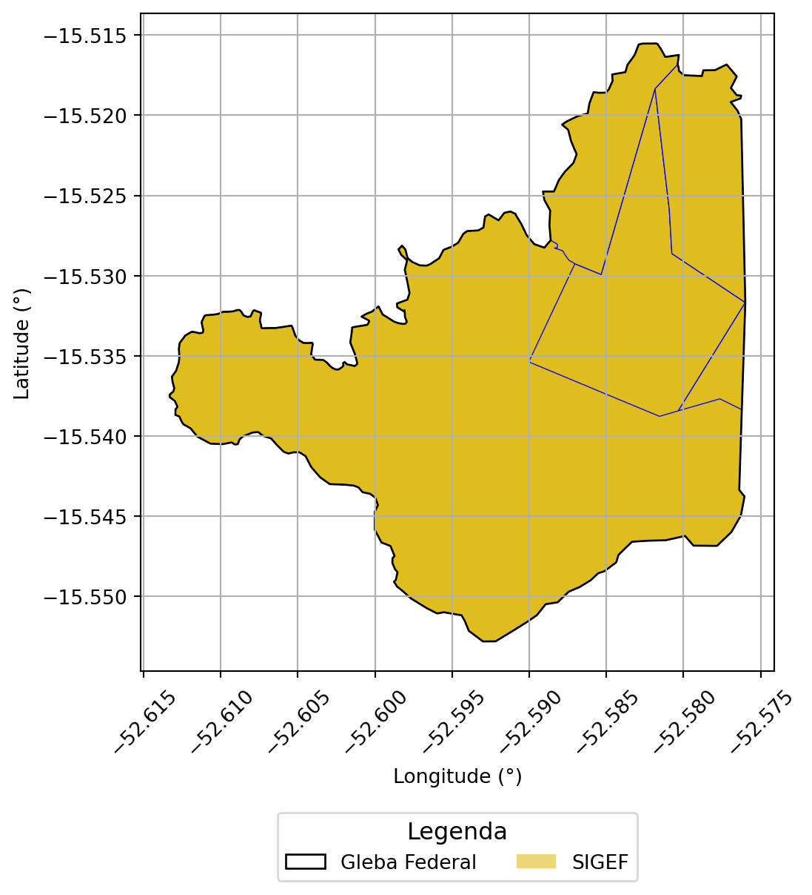
| Código SIGEF | Natureza do Polígono | Área Sobreposta (ha) |
|---|---|---|
| a5de0bb9-a880-43d4-8775-416143959c01 | Gleba Pública | 851.4912 |
| 5b153a00-bc63-4c06-9fc9-3c95a5dda0eb | Particular | 356.1157 |
| 4288036f-00ea-4332-a4c6-680172ebcd94 | Particular | 133.8527 |
| 9d9f7bd0-28a1-4289-ae07-f38ce9f3e9da | Particular | 134.9281 |
| ca887fe5-f7dc-45e7-ba55-0972f420dd23 | Particular | 90.1541 |
| bcbb1fac-db1b-437b-acdd-7229127ce64f | Particular | 63.8327 |
48.14.7 SNCI
Não há sobreposição
48.15 Gleba Analisada: MATRINXÃ 07
| Nome da Gleba | Área (ha) |
|---|---|
| MATRINXÃ 07 | 337.4007 |
48.15.1 Abrangência Municipal
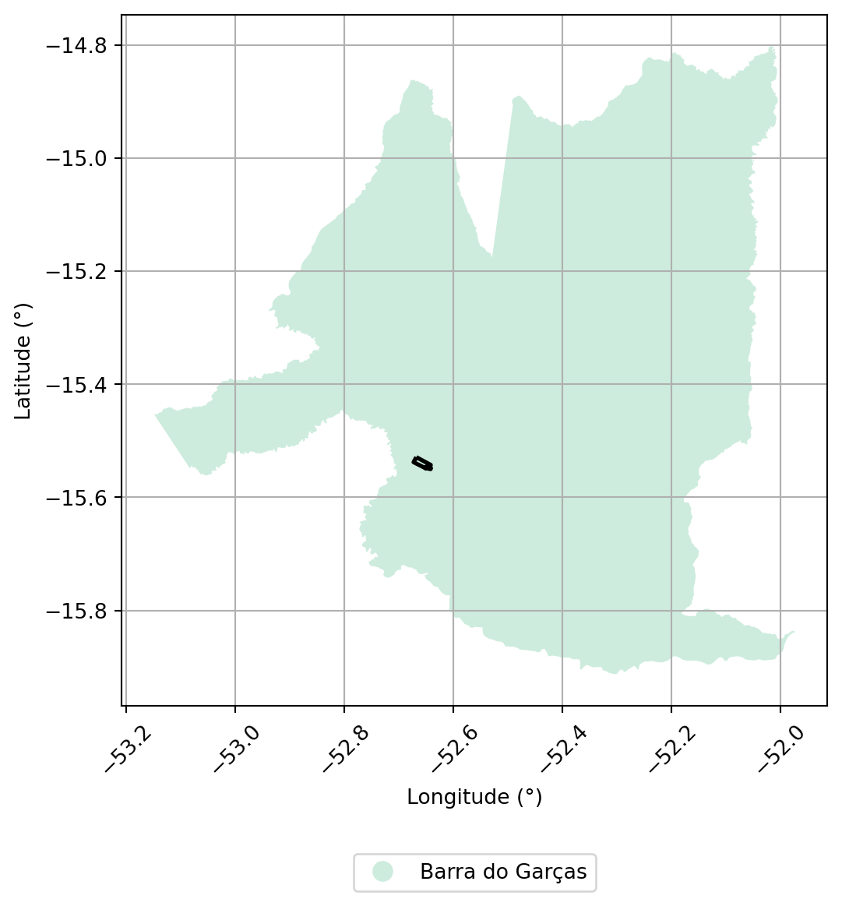
| Estado | Código do Município | Nome do Município |
|---|---|---|
| MT | 5101803 | Barra do Garças |
48.15.2 Unidades de Conservação
Não há sobreposição
48.15.3 Terras Indígenas
Não há sobreposição
48.15.4 Projetos de Assentamento
Não há sobreposição
48.15.5 Território Quilombola
Não há sobreposição
48.15.6 SIGEF
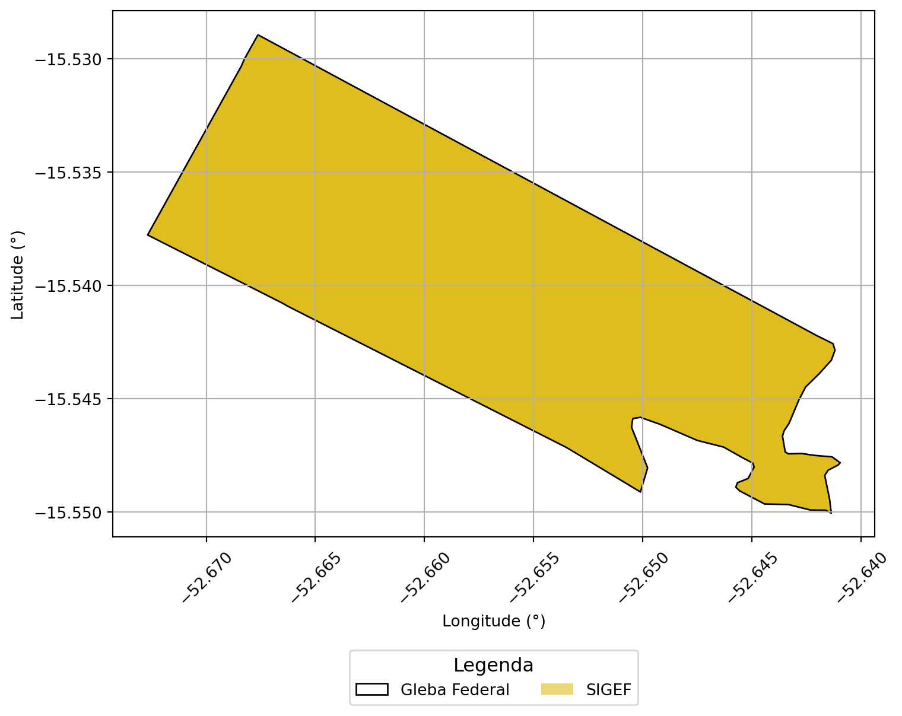
| Código SIGEF | Natureza do Polígono | Área Sobreposta (ha) |
|---|---|---|
| 6bf1ec37-6685-4d3a-af6c-aa6188946606 | Gleba Pública | 337.4457 |
| 283aede5-f0bb-4d14-b743-e7363423ee9c | Particular | 53.7605 |
| 2a7ee023-f3b1-4c19-87ab-10f61ca583d9 | Particular | 109.8210 |
| 00ae45c0-87dd-441e-a7b3-2b5304833563 | Particular | 15.4573 |
| a60d077b-9a97-488d-a044-1d76e1180fc6 | Particular | 2.4761 |
| 97afdfc3-908c-4de5-b099-b6f986ab2191 | Particular | 97.0389 |
48.15.7 SNCI
Não há sobreposição
48.16 Gleba Analisada: MATRINXÃ 08
| Nome da Gleba | Área (ha) |
|---|---|
| MATRINXÃ 08 | 211.0411 |
48.16.1 Abrangência Municipal
| Estado | Código do Município | Nome do Município |
|---|---|---|
| MT | 5101803 | Barra do Garças |
48.16.2 Unidades de Conservação
Não há sobreposição
48.16.3 Terras Indígenas
Não há sobreposição
48.16.4 Projetos de Assentamento
Não há sobreposição
48.16.5 Território Quilombola
Não há sobreposição
48.16.6 SIGEF
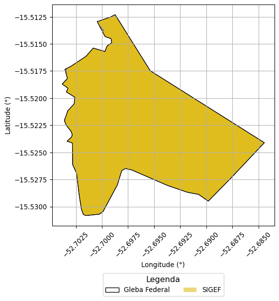
| Código SIGEF | Natureza do Polígono | Área Sobreposta (ha) |
|---|---|---|
| 3c2c3f86-edf1-4e2d-9a13-34d8301c4df0 | Gleba Pública | 211.0662 |
| 91d1c9f4-7f85-4dd1-a992-75d7622aeb33 | Particular | 105.8374 |
| f6be4ea7-b258-4487-a00c-31f211dba547 | Particular | 84.8986 |
| 3274bf87-17a7-4482-8824-40e88026d962 | Particular | 0.0872 |
48.16.7 SNCI
Não há sobreposição
48.17 Gleba Analisada: MATRINXÃ-1
| Nome da Gleba | Área (ha) |
|---|---|
| MATRINXÃ-1 | 4.6897 |
48.17.1 Abrangência Municipal
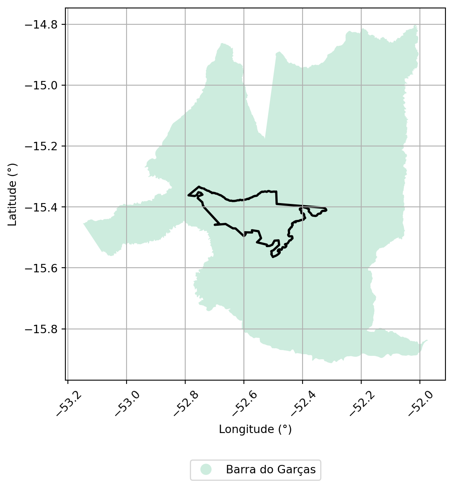
| Estado | Código do Município | Nome do Município |
|---|---|---|
| MT | 5101803 | Barra do Garças |
48.17.2 Unidades de Conservação
Não há sobreposição
48.17.3 Terras Indígenas
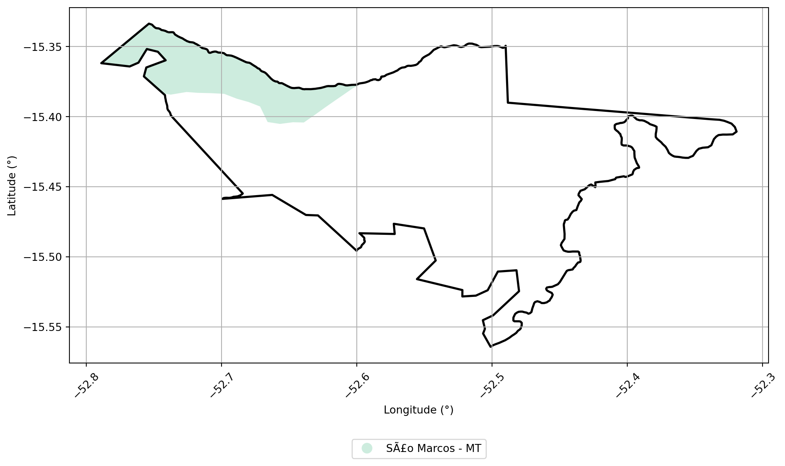
| Nome | Fase de Regularização | Área Sobreposta (ha) |
|---|---|---|
| São Marcos - MT | Regularizada | 5492.4283 |
48.17.4 Projetos de Assentamento
Não há sobreposição
48.17.5 Território Quilombola
Não há sobreposição
48.17.6 SIGEF
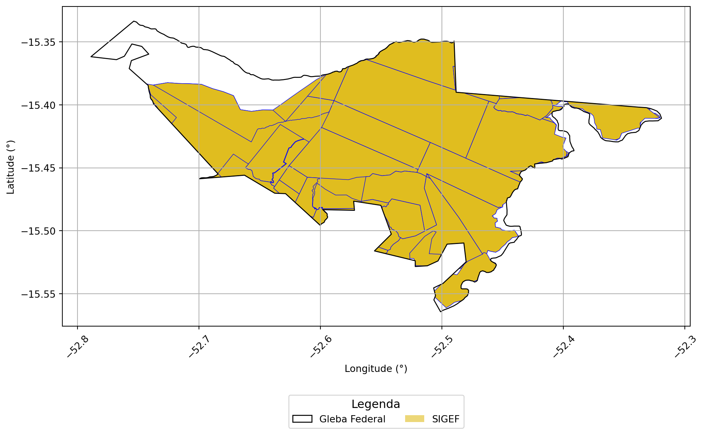
| Código SIGEF | Natureza do Polígono | Área Sobreposta (ha) |
|---|---|---|
| 2d70bb26-e73f-458c-b800-73be687a4a1d | Gleba Pública | 40095.3302 |
| 0b192843-181e-461b-b418-f26d19531918 | Particular | 901.9718 |
| 52f88d5e-1f14-45b5-aa6c-11b5468d01c3 | Particular | 0.1368 |
| 92208b0d-4a6f-4120-837d-9d6518acdbf1 | Particular | 1845.4436 |
| 0cf279a4-4605-47e7-a159-6a962e6e9d34 | Particular | 2306.0028 |
| 94060554-e09d-44ac-8510-d9cf3576f02e | Particular | 1579.4652 |
| 4c59ee84-c5b6-4b0d-8aa8-c99434a86f7b | Particular | 5.1289 |
| 1206492f-0419-44d1-88da-f5339613db29 | Particular | 1878.4141 |
| 979fcd62-ebda-4a68-ac6e-51045d77a1fe | Particular | 92.2917 |
| 809148af-4614-48b6-ac48-f295038c87f2 | Particular | 171.2739 |
| 9ed6b94b-a41e-4362-8fd4-5d81441950d3 | Particular | 36.2442 |
| 89470824-7c0a-4ee1-bd28-fd06fed0a4eb | Particular | 74.8656 |
| 48e31019-9683-4c3b-96d3-fef49d917292 | Particular | 20.5023 |
| 8a79437d-f41a-4533-a0a1-a98646aa01e4 | Particular | 899.0371 |
| cdd8c1f3-d29e-48db-b0d8-47991bedac3c | Particular | 138.2068 |
| 4d14fda4-d8c5-4164-a9d3-fd5198e5713c | Particular | 676.7712 |
| 179491cf-6dcf-44f0-9a1c-8f77f5ed838d | Particular | 3599.5947 |
| 2d7877c5-ebba-4637-9440-fc2d9588a401 | Particular | 0.2413 |
| 39ab3d11-08d1-4b57-8f97-4a432e6191f3 | Particular | 374.1742 |
| a39b3231-9cd4-4aee-ac24-3814867c42ec | Particular | 2180.8076 |
| 6b2be4cd-016b-4770-b5cb-f98e379b118a | Particular | 469.9942 |
| a068025a-a23e-4730-a47d-2d3398074b56 | Particular | 968.7327 |
| 0a5425a6-85cd-44c8-80ef-a8c7e4502753 | Particular | 1.0404 |
| f764d463-47ca-463b-a8a1-6de4f0cc8f31 | Particular | 35.3387 |
| 42720786-b164-4122-a9d4-7fe61a9ed9a0 | Particular | 124.1286 |
| 5def090d-cd5a-40e9-949c-b5d6f71ae5e1 | Particular | 519.6361 |
| 9be06db8-36ed-425e-ac0f-1c510d386e38 | Particular | 10.1996 |
| cb4c477a-a2e4-4745-b73a-e5a21270bab3 | Particular | 320.6480 |
| 260c08fa-26a1-486c-9eac-6e1661635bdb | Particular | 2.7711 |
| d8de01aa-d0eb-4b50-aabb-9a75aceb78aa | Particular | 180.7640 |
| c8b979a9-047b-4ffc-823b-ba20db9d50df | Particular | 500.2116 |
| 4f5db36c-2595-4a80-8d9c-ddd8159552c9 | Particular | 496.9486 |
| 531e1cd1-f597-4993-a925-4e70340ab60a | Particular | 6060.7927 |
| bb74389a-9ff3-4561-8e53-ac6376ffc5d7 | Particular | 2076.5468 |
| 0eca8955-0f35-40b1-a1e5-8cf815a271f5 | Particular | 2736.4833 |
| e9962df8-c441-4bf9-9c6b-04e8430567ae | Particular | 1115.5145 |
| d737fbd6-310b-42d4-9b61-ea74b6e3b388 | Particular | 329.7776 |
| 07ffe684-8e00-4db0-b30f-f108e491d90d | Particular | 2416.6542 |
| 2ddbf00d-b1a6-411f-a126-0d11a6b189eb | Particular | 147.1215 |
48.17.7 SNCI
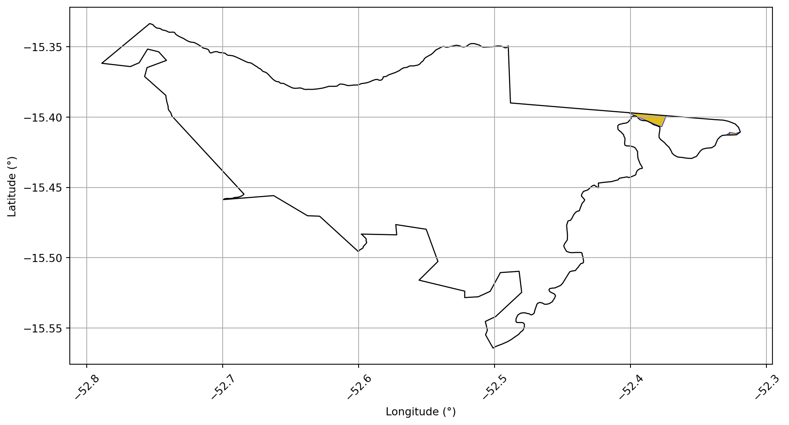
Não há sobreposição
48.18 Gleba Analisada: MEDALHA MILAGROSA
| Nome da Gleba | Área (ha) |
|---|---|
| MEDALHA MILAGROSA | 1366.9776 |
48.18.1 Abrangência Municipal
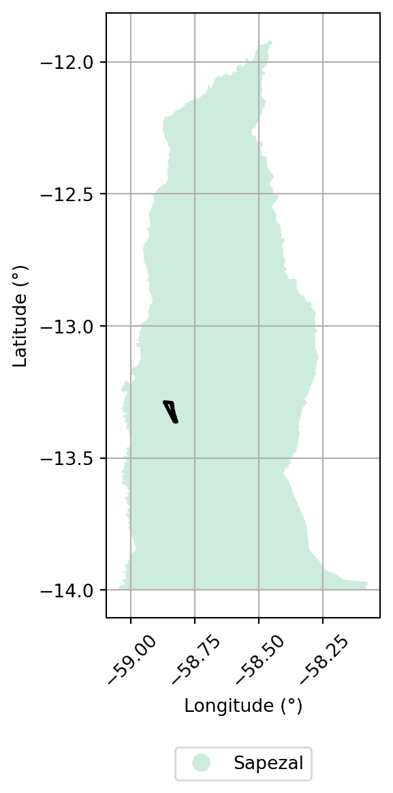
| Estado | Código do Município | Nome do Município |
|---|---|---|
| MT | 5107875 | Sapezal |
48.18.2 Unidades de Conservação
Não há sobreposição
48.18.3 Terras Indígenas
Não há sobreposição
48.18.4 Projetos de Assentamento
Não há sobreposição
48.18.5 Território Quilombola
Não há sobreposição
48.18.6 SIGEF
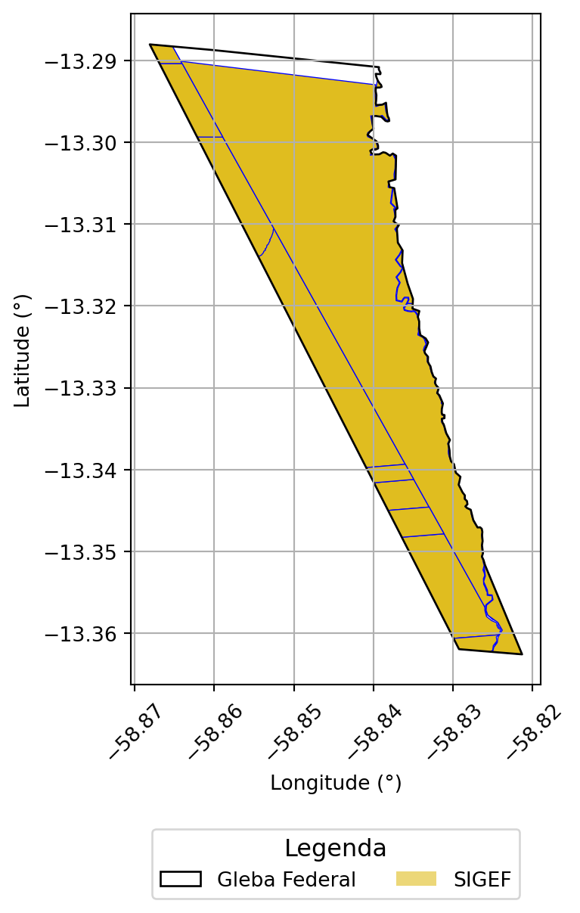
| Código SIGEF | Natureza do Polígono | Área Sobreposta (ha) |
|---|---|---|
| 9e96b59d-015d-40a9-a984-716951924c33 | Gleba Pública | 388.8673 |
| d7b111c3-8136-4674-a621-f03cb7bf3b4e | Gleba Pública | 19.8243 |
| c7922121-277f-4564-a336-15429676669e | Particular | 0.0182 |
| 592bd89d-ad20-4e02-9883-b65b6e4f6b07 | Particular | 0.2285 |
| fa275e05-9d35-4fba-a3a6-734f1cba4b97 | Particular | 0.0624 |
| 0a1cdd6d-91e6-4685-abf4-4717a10e2c7c | Particular | 8.2035 |
| 7d82d5aa-a42f-45d0-9773-9b4dae055a65 | Particular | 1.6509 |
| d38cfd95-a37a-4b92-9477-a75b1ac1ed2a | Particular | 0.2266 |
| 1c74a621-fd84-43d6-ab8a-49d69507672a | Particular | 19.6885 |
| 123e6a6f-0eab-468b-ac00-b41b385d4acf | Particular | 86.3638 |
| bedab5da-204c-4f62-b558-44f2fe26a7aa | Particular | 9.8832 |
| cb2178c1-2707-4bcf-b789-ca7246769ae3 | Particular | 146.3265 |
| b6582447-5c37-44a4-8835-938048af95ee | Particular | 11.5234 |
| 2f46593e-6cbd-4708-b8f0-a096f4b13e08 | Particular | 21.5525 |
| 6f29b35a-9fe3-4974-9a8b-c4848a0b0dd5 | Particular | 21.4854 |
| 5bcfff61-ce68-4bef-a836-6944e3a1cee3 | Particular | 32.6203 |
| d100ebdc-6916-45d1-8ba0-46fdd945440c | Particular | 879.7606 |
| c73f71d8-79c0-482f-a9e0-e2c96b9e0916 | Particular | 7.4769 |
| 044bb456-0380-4159-9d7c-23fe7fd04a50 | Particular | 0.4750 |
| ce5fecae-71c7-4bc4-bd6d-e26e9ddcc179 | Particular | 59.7267 |
48.18.7 SNCI
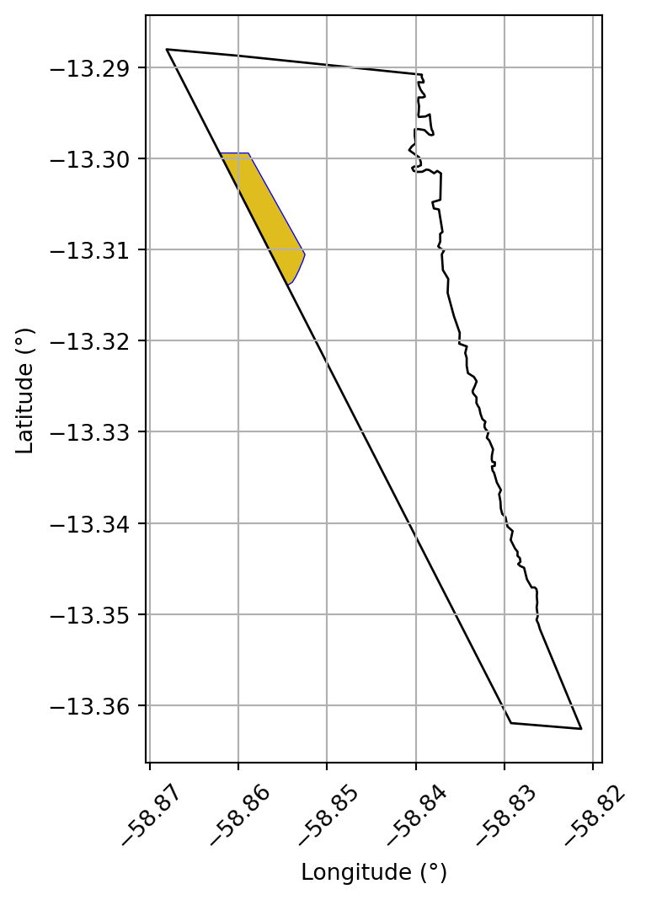
Não há sobreposição
48.19 Gleba Analisada: MESTRE -07
| Nome da Gleba | Área (ha) |
|---|---|
| MESTRE -07 | 407.0603 |
48.19.1 Abrangência Municipal
| Estado | Código do Município | Nome do Município |
|---|---|---|
| MT | 5107800 | Santo Antônio de Leverger |
48.19.2 Unidades de Conservação
Não há sobreposição
48.19.3 Terras Indígenas
Não há sobreposição
48.19.4 Projetos de Assentamento
| SIPRA | Nome | Município | Área Sobreposta (ha) |
|---|---|---|---|
| MT0347000 | PA PONTAL DO GLÓRIA | SANTO ANTONIO DO LEVERGER | 5.1394 |
48.19.5 Território Quilombola
Não há sobreposição
48.19.6 SIGEF

| Código SIGEF | Natureza do Polígono | Área Sobreposta (ha) |
|---|---|---|
| 5dda887e-14ca-4344-8bef-5c7de5e73b2f | Assentamento Parcela | 2.3410 |
| 32acdb7f-d198-492b-af7e-ac0a7fa5cf52 | Assentamento Parcela | 0.1278 |
| 0a8b8dad-cb90-480b-bf94-fbe3645daba7 | Gleba Pública | 366.0650 |
| e6ec41f9-e12b-4a4a-a795-533c26071038 | Particular | 12.3671 |
| 002f9a28-b955-4ef6-a7a4-a67b73789320 | Particular | 6.0993 |
| bfc6b1c2-4a35-4ad5-b3d4-f5434f5ca3af | Particular | 0.4283 |
| 6e5bc0d8-6700-40d8-8f07-979bcbcec638 | Particular | 9.7163 |
| 119eabbe-e575-4279-a358-5f9acd092dd6 | Particular | 26.8544 |
| c4706b53-d7c9-439b-afce-49240a0bdfc8 | Particular | 14.1725 |
| ee374b1d-f57d-4f79-b79e-57886981da6d | Particular | 1.1738 |
| 6624574a-1649-4c6b-abb8-ff2c26dda427 | Particular | 99.3344 |
| 465d44e6-763b-46de-aab5-e1b88c9c31b9 | Particular | 75.5017 |
48.19.7 SNCI
Não há sobreposição
48.20 Gleba Analisada: MESTRE -10
| Nome da Gleba | Área (ha) |
|---|---|
| MESTRE -10 | 130.0453 |
48.20.1 Abrangência Municipal
| Estado | Código do Município | Nome do Município |
|---|---|---|
| MT | 5104807 | Jaciara |
48.20.2 Unidades de Conservação
Não há sobreposição
48.20.3 Terras Indígenas
Não há sobreposição
48.20.4 Projetos de Assentamento
Não há sobreposição
48.20.5 Território Quilombola
Não há sobreposição
48.20.6 SIGEF
| Código SIGEF | Natureza do Polígono | Área Sobreposta (ha) |
|---|---|---|
| 6947d6b9-5da6-4088-9b6d-74fcc9026577 | Particular | 59.6303 |
48.20.7 SNCI
Não há sobreposição
48.21 Gleba Analisada: MESTRE 01
| Nome da Gleba | Área (ha) |
|---|---|
| MESTRE 01 | 7806.6459 |
48.21.1 Abrangência Municipal
| Estado | Código do Município | Nome do Município |
|---|---|---|
| MT | 5104807 | Jaciara |
48.21.2 Unidades de Conservação
Não há sobreposição
48.21.3 Terras Indígenas
Não há sobreposição
48.21.4 Projetos de Assentamento
| SIPRA | Nome | Município | Área Sobreposta (ha) |
|---|---|---|---|
| MT0701000 | PA MESTRE | JACIARA | 7806.6538 |
48.21.5 Território Quilombola
Não há sobreposição
48.21.6 SIGEF
| Código SIGEF | Natureza do Polígono | Área Sobreposta (ha) |
|---|---|---|
| 458d94a3-e903-42a1-921a-e9dcad678092 | Gleba Pública | 7806.6538 |
| 6b4d8ae1-7b96-48a9-9a79-ef5c88f821e1 | Particular | 77.1102 |
| be744a81-ff1b-4bbe-91a6-875a9b67253c | Particular | 0.1125 |
| 1a00adcf-1058-4324-a317-92ab9d9f87cf | Particular | 0.1786 |
| afc2d646-89ee-4785-81f2-c1cc3b9abf9f | Particular | 111.9931 |
| 3d83b91c-b138-49f0-8f13-74c30ffc6ea9 | Particular | 1496.5309 |
48.21.7 SNCI
Não há sobreposição
48.22 Gleba Analisada: MESTRE 02
| Nome da Gleba | Área (ha) |
|---|---|
| MESTRE 02 | 2555.0280 |
48.22.1 Abrangência Municipal
| Estado | Código do Município | Nome do Município |
|---|---|---|
| MT | 5104807 | Jaciara |
48.22.2 Unidades de Conservação
Não há sobreposição
48.22.3 Terras Indígenas
Não há sobreposição
48.22.4 Projetos de Assentamento
Não há sobreposição
48.22.5 Território Quilombola
Não há sobreposição
48.22.6 SIGEF
| Código SIGEF | Natureza do Polígono | Área Sobreposta (ha) |
|---|---|---|
| bba2535c-e188-4eb9-a72a-d65057d8a110 | Gleba Pública | 2555.1060 |
| 6b4d8ae1-7b96-48a9-9a79-ef5c88f821e1 | Particular | 0.0018 |
| 1b052782-0888-4b1b-8552-88f10b606a2e | Particular | 348.4482 |
| f5c66165-d174-405c-971a-557daa9cd63c | Particular | 498.3349 |
| 9f99187f-126d-4bbb-bbea-863172f34145 | Particular | 178.3117 |
| 95d5da57-5c2f-4d35-a02f-d5c340a97cf0 | Particular | 269.8051 |
| 0fde29e6-06b4-4660-a9cf-5d9fe36c601a | Particular | 465.6761 |
| d05deec9-edc2-463f-94da-704e90c6ec9c | Particular | 22.4447 |
| 163bf938-7cb8-4863-bfd2-7334ddc5acd3 | Particular | 100.4955 |
48.22.7 SNCI

Não há sobreposição
48.23 Gleba Analisada: MESTRE 03
| Nome da Gleba | Área (ha) |
|---|---|
| MESTRE 03 | 974.8428 |
48.23.1 Abrangência Municipal
| Estado | Código do Município | Nome do Município |
|---|---|---|
| MT | 5104807 | Jaciara |
| MT | 5105200 | Juscimeira |
48.23.2 Unidades de Conservação
Não há sobreposição
48.23.3 Terras Indígenas
Não há sobreposição
48.23.4 Projetos de Assentamento
Não há sobreposição
48.23.5 Território Quilombola
Não há sobreposição
48.23.6 SIGEF
| Código SIGEF | Natureza do Polígono | Área Sobreposta (ha) |
|---|---|---|
| 43edc059-b3a2-48c7-a5b4-8783f05a3e76 | Gleba Pública | 974.8448 |
| 5d6f2baf-3b1b-42a0-82aa-afa95d3360a0 | Particular | 0.7563 |
| c44c1e6e-ee0d-44e7-8e9b-4a0483fa9d4a | Particular | 0.3372 |
| 70fdbd7f-bb59-408d-a08a-5d71df269b33 | Particular | 486.7674 |
| d3677355-acc0-4b5b-b7d9-90867cf2d8bb | Particular | 485.9801 |
48.23.7 SNCI
Não há sobreposição
48.24 Gleba Analisada: MESTRE 04
| Nome da Gleba | Área (ha) |
|---|---|
| MESTRE 04 | 977.0595 |
48.24.1 Abrangência Municipal
| Estado | Código do Município | Nome do Município |
|---|---|---|
| MT | 5104807 | Jaciara |
48.24.2 Unidades de Conservação
Não há sobreposição
48.24.3 Terras Indígenas
Não há sobreposição
48.24.4 Projetos de Assentamento
Não há sobreposição
48.24.5 Território Quilombola
Não há sobreposição
48.24.6 SIGEF
| Código SIGEF | Natureza do Polígono | Área Sobreposta (ha) |
|---|---|---|
| 4ddfa8a4-d7ca-4909-b82e-05a7761a29c4 | Gleba Pública | 977.0908 |
| d07fe237-2c60-43af-ba46-d069869a42b0 | Particular | 709.3101 |
| 1c2bda97-ad11-4f5d-89e1-4c02075f08d9 | Particular | 12.8510 |
48.24.7 SNCI
Não há sobreposição
48.25 Gleba Analisada: MESTRE 05
| Nome da Gleba | Área (ha) |
|---|---|
| MESTRE 05 | 834.7533 |
48.25.1 Abrangência Municipal
| Estado | Código do Município | Nome do Município |
|---|---|---|
| MT | 5103403 | Cuiabá |
| MT | 5104807 | Jaciara |
| MT | 5105200 | Juscimeira |
48.25.2 Unidades de Conservação
Não há sobreposição
48.25.3 Terras Indígenas
Não há sobreposição
48.25.4 Projetos de Assentamento
Não há sobreposição
48.25.5 Território Quilombola
Não há sobreposição
48.25.6 SIGEF
| Código SIGEF | Natureza do Polígono | Área Sobreposta (ha) |
|---|---|---|
| bf180d29-0a71-436c-8e48-13d5f27b6d7b | Gleba Pública | 834.7764 |
| 677ad2d7-62d7-49be-85ca-f1d3f4393983 | Particular | 0.4175 |
| 92b1adc5-34fc-4652-abed-eb6806f708b3 | Particular | 120.8765 |
| 84b02050-3f4a-4ef8-9731-af89f327ad15 | Particular | 119.4210 |
48.25.7 SNCI
Não há sobreposição
48.26 Gleba Analisada: MESTRE 06
| Nome da Gleba | Área (ha) |
|---|---|
| MESTRE 06 | 490.4314 |
48.26.1 Abrangência Municipal
| Estado | Código do Município | Nome do Município |
|---|---|---|
| MT | 5104807 | Jaciara |
| MT | 5107800 | Santo Antônio de Leverger |
48.26.2 Unidades de Conservação
Não há sobreposição
48.26.3 Terras Indígenas
Não há sobreposição
48.26.4 Projetos de Assentamento
Não há sobreposição
48.26.5 Território Quilombola
Não há sobreposição
48.26.6 SIGEF
| Código SIGEF | Natureza do Polígono | Área Sobreposta (ha) |
|---|---|---|
| 8898aada-607f-4cf3-a26d-67b71df8e243 | Gleba Pública | 490.5096 |
| 51ebffef-9ed7-46f3-8d9f-4eae57e1abfc | Particular | 96.7531 |
| b8327cb5-ecce-461e-ba90-8187c8dde8a7 | Particular | 23.7314 |
| e8763d07-b68d-4464-b8a8-e118ac856599 | Particular | 2.7821 |
| baff0cde-ef5a-4233-842d-5d1050a37a3e | Particular | 321.1497 |
48.26.7 SNCI
Não há sobreposição
48.27 Gleba Analisada: MESTRE 07
| Nome da Gleba | Área (ha) |
|---|---|
| MESTRE 07 | 398.1677 |
48.27.1 Abrangência Municipal
| Estado | Código do Município | Nome do Município |
|---|---|---|
| MT | 5107800 | Santo Antônio de Leverger |
48.27.2 Unidades de Conservação
Não há sobreposição
48.27.3 Terras Indígenas
Não há sobreposição
48.27.4 Projetos de Assentamento
| SIPRA | Nome | Município | Área Sobreposta (ha) |
|---|---|---|---|
| MT0347000 | PA PONTAL DO GLÓRIA | SANTO ANTONIO DO LEVERGER | 1.3072 |
48.27.5 Território Quilombola
Não há sobreposição
48.27.6 SIGEF
| Código SIGEF | Natureza do Polígono | Área Sobreposta (ha) |
|---|---|---|
| 0a8b8dad-cb90-480b-bf94-fbe3645daba7 | Gleba Pública | 398.2508 |
| 6e5bc0d8-6700-40d8-8f07-979bcbcec638 | Particular | 9.7163 |
| 119eabbe-e575-4279-a358-5f9acd092dd6 | Particular | 26.8544 |
| c4706b53-d7c9-439b-afce-49240a0bdfc8 | Particular | 14.1725 |
| 6624574a-1649-4c6b-abb8-ff2c26dda427 | Particular | 99.3620 |
| 465d44e6-763b-46de-aab5-e1b88c9c31b9 | Particular | 75.6096 |
48.27.7 SNCI
Não há sobreposição
48.28 Gleba Analisada: MESTRE 08
| Nome da Gleba | Área (ha) |
|---|---|
| MESTRE 08 | 430.6172 |
48.28.1 Abrangência Municipal
| Estado | Código do Município | Nome do Município |
|---|---|---|
| MT | 5103403 | Cuiabá |
48.28.2 Unidades de Conservação
Não há sobreposição
48.28.3 Terras Indígenas
Não há sobreposição
48.28.4 Projetos de Assentamento
Não há sobreposição
48.28.5 Território Quilombola
Não há sobreposição
48.28.6 SIGEF
| Código SIGEF | Natureza do Polígono | Área Sobreposta (ha) |
|---|---|---|
| 21119bba-7ba0-442a-94dc-0a5d52888ed2 | Gleba Pública | 430.6396 |
| e6236e28-0318-43ed-b628-c915bd1111ea | Particular | 30.0609 |
| 4e91f332-b2e3-46fe-9735-fb41b2a18565 | Particular | 70.0032 |
48.28.7 SNCI
Não há sobreposição
48.29 Gleba Analisada: MESTRE 09
| Nome da Gleba | Área (ha) |
|---|---|
| MESTRE 09 | 365.6958 |
48.29.1 Abrangência Municipal
| Estado | Código do Município | Nome do Município |
|---|---|---|
| MT | 5103403 | Cuiabá |
48.29.2 Unidades de Conservação
Não há sobreposição
48.29.3 Terras Indígenas
Não há sobreposição
48.29.4 Projetos de Assentamento
Não há sobreposição
48.29.5 Território Quilombola
Não há sobreposição
48.29.6 SIGEF
| Código SIGEF | Natureza do Polígono | Área Sobreposta (ha) |
|---|---|---|
| 05b38875-98df-4c4b-be75-0d89394e8046 | Gleba Pública | 365.7015 |
| ea2a52ba-e52c-4ece-a0fe-50c572f1f5c5 | Particular | 48.2160 |
| 52599214-cfe9-42b2-bf30-55cc45715a0a | Particular | 36.1919 |
| 12f97c6a-d246-4499-b0af-0419fffbc392 | Particular | 0.0001 |
| d810a9bc-6540-479c-9c54-6e03dfc172f6 | Particular | 31.4105 |
| 496962c6-f50d-439e-aa95-24c87323a57b | Particular | 244.9284 |
48.29.7 SNCI
Não há sobreposição
48.30 Gleba Analisada: MIRASSOL - LOTE PRIMAVERA
| Nome da Gleba | Área (ha) |
|---|---|
| MIRASSOL - LOTE PRIMAVERA | 2010.4284 |
48.30.1 Abrangência Municipal
| Estado | Código do Município | Nome do Município |
|---|---|---|
| MT | 5105622 | Mirassol d'Oeste |
| MT | 5107107 | São José dos Quatro Marcos |
48.30.2 Unidades de Conservação
Não há sobreposição
48.30.3 Terras Indígenas
Não há sobreposição
48.30.4 Projetos de Assentamento
Não há sobreposição
48.30.5 Território Quilombola
Não há sobreposição
48.30.6 SIGEF
| Código SIGEF | Natureza do Polígono | Área Sobreposta (ha) |
|---|---|---|
| 9e346837-4362-4bd6-ab10-8c7b1b501357 | Particular | 7.1363 |
| 5e442295-af6d-485a-8d90-7ac4cfd8b2f9 | Particular | 37.8113 |
| 4175a7f4-6acb-43a9-b2f5-6d7cc3922438 | Particular | 30.3862 |
| 0595386c-ad27-41f2-9ca0-bb65f7036400 | Particular | 14.1120 |
| 4767d550-6b43-446c-b0dc-c7ce667e12fd | Particular | 2.7604 |
| 866d8a34-be77-4708-8e63-77c0fd63f788 | Particular | 3.9821 |
| e538b8e2-26f4-42da-bd9d-5578cd384faf | Particular | 50.4217 |
| a6057ce3-6727-4dee-8424-6ed0af0323ce | Particular | 43.3198 |
| 910a5533-bbd9-49f1-8197-6ce17d23c522 | Particular | 115.2235 |
| 7b5ae608-3931-406c-8bd3-766de0c28b17 | Particular | 20.9548 |
| ce66b894-2691-436b-a0ec-055c5d28a363 | Particular | 77.2311 |
| f863af26-cc8d-4ef8-adf7-9510cb682d6c | Particular | 50.7540 |
| 2850528d-c4e0-4241-9b97-10bff1d8685d | Particular | 8.2175 |
| dc80cb11-726c-4b8f-9648-7fa74e745c39 | Particular | 52.2718 |
| 51de787f-12f7-4e4d-a9a8-a7b9717d9c33 | Particular | 1.7521 |
| 7d126c61-01a4-42b8-8d3d-e5aed06da4d1 | Particular | 13.3282 |
| d4b978bb-cc30-4927-847f-74a8f7667fae | Particular | 12.3830 |
| 32a9a769-eb94-4cb6-a436-c799916692ae | Particular | 2.5591 |
| f8d692e8-38c2-45dd-bc49-bc05767138b3 | Particular | 1.3171 |
| 36b890cf-3910-45e5-ad12-43af51ea8408 | Particular | 131.9736 |
| 8a81575e-1e00-44c5-a76c-1ddfe90da316 | Particular | 54.3631 |
48.30.7 SNCI
Não há sobreposição
48.31 Gleba Analisada: MIRASSOL - ÁREA 2
| Nome da Gleba | Área (ha) |
|---|---|
| MIRASSOL - ÁREA 2 | 2861.6293 |
48.31.1 Abrangência Municipal
| Estado | Código do Município | Nome do Município |
|---|---|---|
| MT | 5103957 | Glória D'Oeste |
48.31.2 Unidades de Conservação
Não há sobreposição
48.31.3 Terras Indígenas
Não há sobreposição
48.31.4 Projetos de Assentamento
Não há sobreposição
48.31.5 Território Quilombola
Não há sobreposição
48.31.6 SIGEF
| Código SIGEF | Natureza do Polígono | Área Sobreposta (ha) |
|---|---|---|
| fd6901f4-a539-47a1-99e2-c4bf1e0737ec | Particular | 67.6124 |
| 14a09c67-070f-4dab-b4c6-520ef2234608 | Particular | 225.7411 |
| fa91792d-cc09-4e05-b752-698950db2724 | Particular | 278.1474 |
| 5e28e760-bc3b-4aec-81e0-d183473f665c | Particular | 9.2066 |
| 74c0f848-31b3-4a21-b1e3-ff10a9cb5ad3 | Particular | 1245.8817 |
| 96cf191c-793f-41a3-b725-6feda842c3ec | Particular | 52.4205 |
| 2cfce733-5c3e-43d6-95f0-a17c5cb77ca7 | Particular | 112.2965 |
| e38da649-23ad-4069-b2c3-09f0d7539d54 | Particular | 68.6343 |
| 7433e2af-ccfe-4eb4-8d94-d37ff04a9c93 | Particular | 64.3271 |
| 4b019e7b-9697-4d68-a5ef-c38b41c13bae | Particular | 12.8561 |
| 3c283f57-d5d2-4be5-8034-592a56b911a2 | Particular | 80.4944 |
| ef88d38c-98a1-4005-b5fa-5aa2199d2152 | Particular | 53.3502 |
| 6b4f8c9d-f187-4b5c-a5db-6342d17e52fd | Particular | 49.5768 |
| 9103f4fb-305c-4151-ab00-d8a0be6d5625 | Particular | 194.3920 |
| f58d1fe5-e411-43b7-a9a0-d859f1d3a71b | Particular | 42.5968 |
48.31.7 SNCI
Não há sobreposição
48.32 Gleba Analisada: MIRASSOL -ÁREA 01
| Nome da Gleba | Área (ha) |
|---|---|
| MIRASSOL -ÁREA 01 | 1165.2116 |
48.32.1 Abrangência Municipal
| Estado | Código do Município | Nome do Município |
|---|---|---|
| MT | 5103957 | Glória D'Oeste |
| MT | 5107107 | São José dos Quatro Marcos |
48.32.2 Unidades de Conservação
Não há sobreposição
48.32.3 Terras Indígenas
Não há sobreposição
48.32.4 Projetos de Assentamento
Não há sobreposição
48.32.5 Território Quilombola
Não há sobreposição
48.32.6 SIGEF
| Código SIGEF | Natureza do Polígono | Área Sobreposta (ha) |
|---|---|---|
| f70c6d6f-408a-4fbb-abdb-ec35efdd99dd | Particular | 68.1149 |
| 92fc4f97-f839-44e8-8111-843726221bb4 | Particular | 0.7178 |
| 932b017e-92a3-4b74-8b42-a8f10511e64d | Particular | 155.5506 |
| 5256b67e-f3f2-4a6d-ae1c-c49953481102 | Particular | 20.9737 |
| 19760752-d919-4db4-aa5d-b34c08f956a8 | Particular | 67.2489 |
| 1d59299a-6d4a-4f80-a2b9-c511a1937084 | Particular | 16.5564 |
| 5d4432d3-f162-49eb-9420-b16c99c1f557 | Particular | 2.4826 |
| 2329d4f5-1eff-4bbd-a7c3-ad376f7b7ef8 | Particular | 20.5868 |
| dd3816a8-c1a8-4168-9429-fab1960f2664 | Particular | 29.7203 |
| e50a9dc4-30ba-498e-9bd3-f0b07b36a45c | Particular | 15.9522 |
| 417c7708-ad45-422b-b437-c7975e60e5b2 | Particular | 16.1068 |
| 0fe59189-02ab-4307-9516-0df79cf786fc | Particular | 8.6024 |
| a0f8cf73-7c22-4b93-892a-a8c6e8b749ff | Particular | 25.3399 |
| 93a6bf93-8db4-4047-9105-eb3adde8dade | Particular | 1.8483 |
| 41a6bc2e-cdcf-49ee-bdd1-1fe419822e47 | Particular | 12.2201 |
| b482f51c-bc48-4e5a-aa41-96aa794d95aa | Particular | 9.5824 |
48.32.7 SNCI
Não há sobreposição
48.33 Gleba Analisada: MONJOLINHO
| Nome da Gleba | Área (ha) |
|---|---|
| MONJOLINHO | 51.5922 |
48.33.1 Abrangência Municipal
| Estado | Código do Município | Nome do Município |
|---|---|---|
| MT | 5103007 | Chapada dos Guimarães |
48.33.2 Unidades de Conservação
| Nome | Categoria | Responsabilidade | Área Sobreposta (ha) |
|---|---|---|---|
| ÁREA DE PROTEÇÃO AMBIENTAL DA CHAPADA DOS GUIMARÃES | Área de Proteção Ambiental | Estadual | 51.6045 |
48.33.3 Terras Indígenas
Não há sobreposição
48.33.4 Projetos de Assentamento
Não há sobreposição
48.33.5 Território Quilombola
Não há sobreposição
48.33.6 SIGEF
| Código SIGEF | Natureza do Polígono | Área Sobreposta (ha) |
|---|---|---|
| 7a399820-8a67-4e36-8f03-31d01a133fdd | Gleba Pública | 51.6045 |
| 4597cfe6-9fbf-42e7-926d-420abd64d5ea | Particular | 2.2030 |
| 52c11402-60a5-41d5-9572-1ea015549832 | Particular | 25.6582 |
| da4ae154-866a-4d6b-a967-9a5792c44eaa | Particular | 13.3739 |
48.33.7 SNCI
Não há sobreposição
48.34 Gleba Analisada: MONJOLINHO
| Nome da Gleba | Área (ha) |
|---|---|
| MONJOLINHO | 4913.6209 |
48.34.1 Abrangência Municipal
| Estado | Código do Município | Nome do Município |
|---|---|---|
| MT | 5103007 | Chapada dos Guimarães |
48.34.2 Unidades de Conservação
| Nome | Categoria | Responsabilidade | Área Sobreposta (ha) |
|---|---|---|---|
| ÁREA DE PROTEÇÃO AMBIENTAL DA CHAPADA DOS GUIMARÃES | Área de Proteção Ambiental | Estadual | 4914.7836 |
48.34.3 Terras Indígenas
Não há sobreposição
48.34.4 Projetos de Assentamento
Não há sobreposição
48.34.5 Território Quilombola
Não há sobreposição
48.34.6 SIGEF
| Código SIGEF | Natureza do Polígono | Área Sobreposta (ha) |
|---|---|---|
| 2ad0ba96-d6b4-43ae-86c3-51fd05d76155 | Gleba Pública | 4914.7836 |
| 01596d7c-e861-4351-886b-7e70217ff97d | Particular | 12.8887 |
| afc3e7fb-6324-4f3c-8582-c877cdbe830b | Particular | 16.7346 |
| 5e98b01d-c13b-49eb-b12a-d3bd0c584ce9 | Particular | 71.8580 |
| 3bd6a4b9-7971-4f43-b91f-6a6ab7788673 | Particular | 20.0131 |
| c140e9b3-cf26-4fbf-89db-d501b71a7b7d | Particular | 19.9796 |
| f1340bb5-1109-49ab-8bcd-2c0ebf1b0ff3 | Particular | 624.2898 |
| 42713982-c022-4fa3-a076-d2d611403e4d | Particular | 390.5211 |
| ae55deff-6734-45f9-ac33-f01ff124483f | Particular | 19.8171 |
| 74e68bdb-3f85-4169-a400-6c3376aeb942 | Particular | 20.3409 |
48.34.7 SNCI
Não há sobreposição
48.35 Gleba Analisada: MONTE NEGRO 02
| Nome da Gleba | Área (ha) |
|---|---|
| MONTE NEGRO 02 | 1651.5449 |
48.35.1 Abrangência Municipal
| Estado | Código do Município | Nome do Município |
|---|---|---|
| MT | 5101803 | Barra do Garças |
| MT | 5106653 | Pontal do Araguaia |
48.35.2 Unidades de Conservação
Não há sobreposição
48.35.3 Terras Indígenas
Não há sobreposição
48.35.4 Projetos de Assentamento
Não há sobreposição
48.35.5 Território Quilombola
Não há sobreposição
48.35.6 SIGEF
| Código SIGEF | Natureza do Polígono | Área Sobreposta (ha) |
|---|---|---|
| 10bd87a0-34af-4572-9b88-d3b3db4355c9 | Gleba Pública | 1652.0037 |
| 69c7d575-3d70-4fa7-9881-c319b1290d5e | Particular | 138.9272 |
| 238c66c8-1d43-42ff-946a-38c81cf1b3eb | Particular | 351.2326 |
| c672dcca-cc1b-4718-988c-8360d6898505 | Particular | 0.0357 |
| 8a0701d6-65f9-4581-bfba-c5de148fdeb8 | Particular | 76.3331 |
| 5bf9f417-7bb6-48dc-aa17-436907214bce | Particular | 191.6869 |
48.35.7 SNCI
Não há sobreposição
48.36 Gleba Analisada: MONTE NEGRO 04
| Nome da Gleba | Área (ha) |
|---|---|
| MONTE NEGRO 04 | 1035.0674 |
48.36.1 Abrangência Municipal

| Estado | Código do Município | Nome do Município |
|---|---|---|
| MT | 5106653 | Pontal do Araguaia |
| MT | 5108204 | Torixoréu |
48.36.2 Unidades de Conservação
Não há sobreposição
48.36.3 Terras Indígenas
Não há sobreposição
48.36.4 Projetos de Assentamento
Não há sobreposição
48.36.5 Território Quilombola
Não há sobreposição
48.36.6 SIGEF
| Código SIGEF | Natureza do Polígono | Área Sobreposta (ha) |
|---|---|---|
| cef22c86-8d62-4d37-94b6-83f636f1e56d | Gleba Pública | 1035.1829 |
| ed588533-cde6-4eb1-9ba0-f55ae37b8da2 | Particular | 204.0900 |
| 4d49a6bb-6ee7-42e6-b3c5-9e625e4bab50 | Particular | 103.4737 |
| b32fe95b-509a-4b6c-95e3-648867483a68 | Particular | 0.4579 |
| 7e82645e-310d-4df4-9024-68a56971e9ad | Particular | 317.6127 |
| e216bd5b-5225-4e4c-8d6e-2bf087246749 | Particular | 103.8726 |
| 57f7ca73-ee8d-4192-8f7a-c63d2d4c9985 | Particular | 104.8823 |
| 39f1daee-c15c-41c4-893a-a29c408bab81 | Particular | 0.0104 |
48.36.7 SNCI
Não há sobreposição
48.37 Gleba Analisada: MONTE NEGRO 09
| Nome da Gleba | Área (ha) |
|---|---|
| MONTE NEGRO 09 | 518.2931 |
48.37.1 Abrangência Municipal

| Estado | Código do Município | Nome do Município |
|---|---|---|
| MT | 5106653 | Pontal do Araguaia |
48.37.2 Unidades de Conservação
Não há sobreposição
48.37.3 Terras Indígenas
Não há sobreposição
48.37.4 Projetos de Assentamento
Não há sobreposição
48.37.5 Território Quilombola
Não há sobreposição
48.37.6 SIGEF
| Código SIGEF | Natureza do Polígono | Área Sobreposta (ha) |
|---|---|---|
| 069d2fb0-b9f3-42a8-9766-9171376f8d36 | Gleba Pública | 518.3728 |
| 45c9deb4-4d70-4c7f-92be-ada04451ed71 | Particular | 220.0961 |
| 475dd3de-470e-4355-b5e0-521739c987a7 | Particular | 143.0616 |
| cb8542e4-1080-41a9-a614-60c62e698718 | Particular | 0.3130 |
| 2ccf016c-a2be-4da6-96ef-722c7357cc85 | Particular | 88.7747 |
48.37.7 SNCI
Não há sobreposição
48.38 Gleba Analisada: MONTE NEGRO 09
| Nome da Gleba | Área (ha) |
|---|---|
| MONTE NEGRO 09 | 146.6106 |
48.38.1 Abrangência Municipal
| Estado | Código do Município | Nome do Município |
|---|---|---|
| MT | 5106653 | Pontal do Araguaia |
48.38.2 Unidades de Conservação
Não há sobreposição
48.38.3 Terras Indígenas
Não há sobreposição
48.38.4 Projetos de Assentamento
Não há sobreposição
48.38.5 Território Quilombola
Não há sobreposição
48.38.6 SIGEF
| Código SIGEF | Natureza do Polígono | Área Sobreposta (ha) |
|---|---|---|
| 10af5a52-bf41-4a75-a201-31c5f1070dcd | Gleba Pública | 146.6331 |
48.38.7 SNCI
Não há sobreposição
48.39 Gleba Analisada: MONTE NEGRO 1
| Nome da Gleba | Área (ha) |
|---|---|
| MONTE NEGRO 1 | 14994.4065 |
48.39.1 Abrangência Municipal
| Estado | Código do Município | Nome do Município |
|---|---|---|
| MT | 5106653 | Pontal do Araguaia |
48.39.2 Unidades de Conservação
Não há sobreposição
48.39.3 Terras Indígenas
Não há sobreposição
48.39.4 Projetos de Assentamento
Não há sobreposição
48.39.5 Território Quilombola
Não há sobreposição
48.39.6 SIGEF
| Código SIGEF | Natureza do Polígono | Área Sobreposta (ha) |
|---|---|---|
| 2b293be7-a6d7-4843-ae41-cfbf59454538 | Gleba Pública | 14995.9964 |
| b32fe95b-509a-4b6c-95e3-648867483a68 | Particular | 40.6979 |
| b87c7134-b9a5-4153-88d7-3c043f4b5c21 | Particular | 90.1376 |
| 5a585a2c-d108-4139-9a10-a62c1b2fff14 | Particular | 22.8530 |
| d9ccd4fe-08ef-43de-992a-6cb9c9a80ecc | Particular | 1263.2298 |
| 7cd600ca-3cbe-4e70-954b-99100b5ded89 | Particular | 211.3420 |
| b0f574b6-3ab1-42a5-a26a-6e30c6c01cb2 | Particular | 310.5415 |
| 2570fd83-438e-4fb1-b1f6-38a314f154f8 | Particular | 70.4754 |
| 2ac34ac1-19e8-4f4c-badd-d1ecd33cb7ab | Particular | 36.2677 |
| 318e044a-5975-40ea-8931-c7c7caaab198 | Particular | 84.9205 |
| 0e627cbd-675f-417d-bb87-46928371a9a1 | Particular | 85.2507 |
| c54dd2ed-3ecf-4c87-b17d-ecbf369030e8 | Particular | 94.7202 |
| b6aeee32-4fd8-48ea-abcc-52136b6a3847 | Particular | 816.1174 |
| c39701ed-2477-47f9-8e28-06b83ebbd8ac | Particular | 13.7066 |
| a573d1b4-4d65-4bd9-8a5a-a6a0567506fb | Particular | 16.2852 |
| 82257190-f20c-4ed8-b33f-63c0418b754e | Particular | 157.5151 |
| 8d05ba7c-9534-46d7-b481-1fc8d4e37c34 | Particular | 190.4252 |
| b8077f98-e821-4af1-94b0-ba77f39f2e52 | Particular | 136.5339 |
| e28d8729-f572-46db-920f-cb8e7c526911 | Particular | 241.1387 |
| b0c70570-98e8-47c6-84bb-f4c8845d33f9 | Particular | 32.9381 |
| 7d167538-c0ba-4202-9915-0d30c8e238bd | Particular | 77.6182 |
| cf04ccef-0325-46ea-9bce-6194c22f1600 | Particular | 282.6106 |
| 24c5913e-8cd2-4274-adbc-e2a7f9c86e1e | Particular | 23.5876 |
| 89d8de6c-0d08-49f3-8303-be1759d6d883 | Particular | 32.1981 |
| 029482ad-f4a6-4de2-9e72-ba4c7e2ac7a6 | Particular | 204.8911 |
| f3b9d765-47be-402b-8268-cefbca2c1383 | Particular | 46.0487 |
| ecabdf9d-62e9-41aa-9682-52063703bf34 | Particular | 10.4968 |
| 75dc653b-5496-4c10-b9b2-b84f06508814 | Particular | 152.9074 |
| f40095c3-8008-425e-9524-c24f164750a7 | Particular | 552.4711 |
| 76b698cb-abda-4cfc-adf8-651aa15807d2 | Particular | 640.9680 |
| fb9849bf-2b45-455a-8dec-f5093f20c5cb | Particular | 160.6023 |
| 7de4d031-bb5b-4d08-8f6c-fb71ff11dcf6 | Particular | 504.1822 |
| 9fb5ee3e-42ee-4eb8-a3b1-a936957d8283 | Particular | 9.2809 |
| 5a04f0d3-0752-430e-8c08-1b39fdcd6a04 | Particular | 521.5392 |
| aa14edd0-e319-4ab8-a272-72a856ae5831 | Particular | 69.5342 |
| e54d2d7b-96ef-4bfb-aaa6-910cb5385b5f | Particular | 26.8189 |
| c0263ab0-0a09-4168-861a-6a6475d0953a | Particular | 106.4886 |
| 720bc0d5-4fd2-46c9-a6ea-bdb6abfc644b | Particular | 506.2168 |
48.39.7 SNCI

Não há sobreposição
48.40 Gleba Analisada: MONTE NEGRO 10
| Nome da Gleba | Área (ha) |
|---|---|
| MONTE NEGRO 10 | 583.2737 |
48.40.1 Abrangência Municipal
| Estado | Código do Município | Nome do Município |
|---|---|---|
| MT | 5106653 | Pontal do Araguaia |
48.40.2 Unidades de Conservação
Não há sobreposição
48.40.3 Terras Indígenas
Não há sobreposição
48.40.4 Projetos de Assentamento
Não há sobreposição
48.40.5 Território Quilombola
Não há sobreposição
48.40.6 SIGEF
| Código SIGEF | Natureza do Polígono | Área Sobreposta (ha) |
|---|---|---|
| 9adff3c9-efbd-4888-9e4b-5337c7aca310 | Gleba Pública | 583.3692 |
| 50743b4b-aa1f-48a4-80ec-de2c3ff696ff | Particular | 0.7009 |
48.40.7 SNCI
Não há sobreposição